install.packages(c(
"tidyverse", "survival", "survminer", "patchwork",
"ggpubr", "viridis", "forestplot", "gtsummary", "gt",
"table1", "ggridges", "pROC"
))Publication-Quality Visualization with R & Python
Workshop Code-Along — Positron Edition
Setup
This document runs both R and Python chunks side by side. In Positron, make sure you have both an R kernel and a Python (Jupyter) kernel available.
If this chunk errors (“conda environment not found” or similar), run
conda env listin a terminal to confirm the exact environment name, and update the string above to match. If you’re using a plain venv instead of conda, usereticulate::use_virtualenv("/path/to/.venv", required = TRUE)instead.
R packages needed
Python packages needed
# pip install pandas numpy matplotlib seaborn lifelines statannotations scipy tableone scikit-learn statsmodels joypySetup gotcha — read before installing: in Positron, R and Python can run as two completely separate Python environments. If you install packages by calling
reticulate::repl_python()from the R console, that only installs into reticulate’s own Python (managed viauv) — it will not be visible to Quarto’s{python}chunks or to Positron’s native Python console/kernel.To install packages for this document, run the
pip installline above directly in one of these places instead:
Positron’s Python console (select the Python interpreter/kernel in the console picker, not R), or
A terminal, using the exact interpreter your Python kernel uses:
# first, inside the Python console, find the right interpreter: python -c "import sys; print(sys.executable)" # then install using that exact path: /path/from/above -m pip install pandas numpy matplotlib seaborn lifelines statannotations scipy tableoneAfter installing, restart the Python kernel (not just re-run the cell) so the newly installed packages are importable. If
import pandasstill fails after a restart, it’s almost always because the install went into a different Python than the one the kernel is running — re-checksys.executablefrom inside the kernel to confirm you’re installing into the right place.
1. Generate Synthetic Clinical Data
We’ll simulate a small clinical trial dataset: patient demographics, a biomarker, treatment arm, a continuous lab outcome, and survival/censoring data. This mirrors the shape of real trial data without using any real patient information.
Sample size: 200 simulated patients
| Column | Type | Description |
|---|---|---|
| patient_id | ID | Sequential, e.g. PT-001 to PT-200 |
| arm | Categorical (2 levels) | Control or Treatment, randomly assigned ~50/50 |
| age | Continuous | Normally distributed, mean 58, SD 12 |
| sex | Categorical (2 levels) | Female (52%) / Male (48%) |
| site | Categorical (4 levels) | Site_1-Site_4, randomly assigned (Site_3 has a real effect baked in – see Section 11.3 note) |
| smoker | Categorical (3 levels) | Never (50%), Former (30%), Current (20%) |
| biomarker | Continuous | Right-skewed (gamma distribution, shape 2, scale 15) |
| baseline_score | Continuous | Normally distributed, mean 50, SD 10 |
| followup_score | Continuous | Baseline score minus a treatment effect (Treatment arm drops ~8 points on average; Control drops ~1 point) |
| responder / response_label | Binary / Categorical | 1 = responder; higher response rate in Treatment (55%) vs. Control (30%) |
| time_months / event | Continuous / Binary | Simulated time-to-event and event/censoring indicator (65% event rate) |
Two companion datasets are generated later in the document: longitudinal_data.csv (same 200 patients, measured at 4 visits — week 0, 4, 8, 12) and pca_data.csv (same 200 patients with 6 synthetic correlated biomarkers, marker_1-marker_6).
R version
library(tidyverse)
set.seed(42)
n <- 200
clinical_r <- tibble(
patient_id = sprintf("PT-%03d", 1:n),
arm = sample(c("Control", "Treatment"), n, replace = TRUE),
age = round(rnorm(n, mean = 58, sd = 12)),
sex = sample(c("Female", "Male"), n, replace = TRUE, prob = c(0.52, 0.48)),
site = sample(paste0("Site_", 1:4), n, replace = TRUE),
smoker = sample(c("Never", "Former", "Current"), n, replace = TRUE, prob = c(0.5, 0.3, 0.2)),
biomarker = rgamma(n, shape = 2, scale = 15),
baseline_score = rnorm(n, mean = 50, sd = 10)
) %>%
mutate(
# Site-level effect baked in so the ANOVA/pairwise comparisons section
# (Section 11.3) has something real to find -- Site_3 runs noticeably
# lower than the others, Site_1/2/4 are similar to each other. Without
# this, all 4 sites are statistically indistinguishable and the
# pairwise-comparison plot has nothing significant to show.
site_effect = case_when(
site == "Site_3" ~ -9,
TRUE ~ 0
),
# Treatment effect: Treatment arm has lower follow-up score on average
followup_score = baseline_score -
ifelse(arm == "Treatment", rnorm(n, 8, 5), rnorm(n, 1, 5)) +
site_effect,
# Response outcome, loosely tied to arm (for chi-square/fisher demo)
responder = ifelse(
arm == "Treatment",
rbinom(n, 1, 0.55),
rbinom(n, 1, 0.30)
),
response_label = factor(responder, labels = c("No Response", "Response")),
# Survival time influenced by arm and age
time_months = pmax(
1,
rexp(n, rate = 1 / (24 + ifelse(arm == "Treatment", 8, 0) - (age - 58) * 0.2))
),
event = rbinom(n, 1, prob = 0.65) # 1 = event occurred, 0 = censored
) %>%
select(-site_effect)
write_csv(clinical_r, "clinical_trial_data.csv")
head(clinical_r)# A tibble: 6 × 13
patient_id arm age sex site smoker biomarker baseline_score
<chr> <chr> <dbl> <chr> <chr> <chr> <dbl> <dbl>
1 PT-001 Control 72 Female Site_4 Current 18.2 62.6
2 PT-002 Control 71 Female Site_2 Never 8.93 53.3
3 PT-003 Control 46 Male Site_2 Current 40.5 62.9
4 PT-004 Control 80 Female Site_1 Former 12.0 50.0
5 PT-005 Treatment 50 Female Site_2 Never 76.6 57.8
6 PT-006 Treatment 59 Female Site_4 Never 17.3 55.7
# ℹ 5 more variables: followup_score <dbl>, responder <int>,
# response_label <fct>, time_months <dbl>, event <int>Python version (reads the same CSV for consistency)
import pandas as pd
import numpy as np
import matplotlib.pyplot as plt
import seaborn as sns
sns.set_theme(style="whitegrid", font_scale=1.0)
clinical_py = pd.read_csv("clinical_trial_data.csv")
clinical_py.head() patient_id arm age ... response_label time_months event
0 PT-001 Control 72 ... No Response 17.369203 0
1 PT-002 Control 71 ... No Response 38.845020 0
2 PT-003 Control 46 ... No Response 11.674484 1
3 PT-004 Control 80 ... No Response 82.173169 1
4 PT-005 Treatment 50 ... No Response 66.918541 0
[5 rows x 13 columns]Longitudinal data (for line chart section)
Many clinical questions involve repeated measures over time — e.g., a lab value tracked at baseline, week 4, week 8, week 12. Let’s simulate that too.
visits <- c(0, 4, 8, 12)
longitudinal_r <- clinical_r %>%
select(patient_id, arm) %>%
crossing(week = visits) %>%
arrange(patient_id, week) %>%
group_by(patient_id) %>%
mutate(
arm_effect = ifelse(first(arm) == "Treatment", -1.8, -0.3),
score = 50 + arm_effect * week + rnorm(n(), 0, 4)
) %>%
ungroup() %>%
select(patient_id, arm, week, score)
write_csv(longitudinal_r, "longitudinal_data.csv")
head(longitudinal_r, 8)# A tibble: 8 × 4
patient_id arm week score
<chr> <chr> <dbl> <dbl>
1 PT-001 Control 0 42.0
2 PT-001 Control 4 43.6
3 PT-001 Control 8 49.1
4 PT-001 Control 12 45.8
5 PT-002 Control 0 47.1
6 PT-002 Control 4 45.7
7 PT-002 Control 8 49.8
8 PT-002 Control 12 40.0longitudinal_py = pd.read_csv("longitudinal_data.csv")
longitudinal_py.head(8) patient_id arm week score
0 PT-001 Control 0 41.973180
1 PT-001 Control 4 43.632767
2 PT-001 Control 8 49.063353
3 PT-001 Control 12 45.791187
4 PT-002 Control 0 47.063624
5 PT-002 Control 4 45.672112
6 PT-002 Control 8 49.806268
7 PT-002 Control 12 39.956636Teaching note: generating data once in R and loading it in Python keeps both languages working on identical numbers, which makes side-by-side comparisons fair.
2. Choosing the Right Visualization
Before rendering this section: run the chunk immediately below once (interactively, or it will run automatically during render) to generate the small illustrative example images referenced in this section. It creates an
images/folder next to this.qmdand writes 8 small SVG files into it — no external packages needed beyond base R.
If the chunk above fails for any reason, the text explanations below still stand on their own — the images are illustrative supplements, not required for understanding the guidance.
Before writing any code, the most important decision is: what type of data do I have, and what question am I asking of it? The wrong plot type for the data structure is one of the most common (and most avoidable) reasons a figure gets flagged in review. Use this as a decision reference, not a rulebook — there are always exceptions, but these are solid defaults.
Quick decision table
| Data type | Question being asked | Recommended plot |
|---|---|---|
| Continuous, 1 group | Distribution shape | Histogram, density plot |
| Continuous, 2 groups | Compare distributions | Boxplot + jitter, violin plot |
| Continuous, 3+ groups | Compare distributions | Boxplot/violin faceted or grouped |
| Continuous, paired/matched | Change within subject | Paired line plot (spaghetti plot) |
| Continuous x continuous | Relationship/correlation | Scatter plot (+ trend line) |
| Continuous over time | Trend / trajectory | Line chart (mean +/- SE/SD) |
| Time-to-event (censored) | Survival/time-to-event | Kaplan-Meier curve |
| Categorical x categorical | Association/proportions | Stacked or grouped bar, mosaic plot |
| Categorical, 1 variable | Counts/frequency | Bar chart |
| Effect sizes across subgroups | Compare estimates + CIs | Forest plot |
| High-dimensional (many genes/features) | Structure, clustering, batch effects | PCA/UMAP scatter, heatmap |
Worked examples
Boxplot — when you have continuous data split by a categorical grouping variable. Example: comparing a lab value (continuous) across 2–4 treatment arms (categorical). The box shows median and IQR, whiskers show range (or 1.5×IQR), and adding jittered points on top shows you the actual sample size and whether the distribution is skewed or bimodal — something the box alone can hide. This is almost always a better default than a bar chart of group means, because a bar+error bar can look identical for very different underlying distributions (e.g., bimodal vs. unimodal data can produce the same mean and SD).
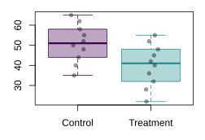
Bar chart — when you have counts or proportions of categorical data, or when you specifically want to communicate a mean with its own important caveat: a bar chart of means can be misleading because it visually implies the data starts at zero and all the information is in the bar height. If you do use mean ± SD/SE bars for continuous data (common in bench science), always overlay individual data points so the reader can see the real distribution underneath the summary statistic. Don’t use bar charts for continuous distributions when a boxplot or violin would preserve more information.
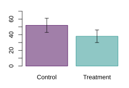
Histogram — when you want to see the full distribution shape of one continuous variable. Example: checking whether a biomarker is normally distributed before deciding whether to use a t-test or a Wilcoxon test in your Table 1. This is a diagnostic plot more than a publication plot, but it’s essential during analysis, before you pick which group-comparison test to run downstream. A density plot (smoothed version) is the equivalent when you want to overlay 2+ groups without the visual clutter of overlapping bars.
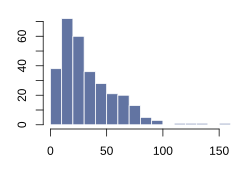
Scatter plot — when you have two continuous variables and want to show a relationship. Classic case: biomarker vs. outcome score. This is also the right plot for PCA results: after dimensionality reduction, you plot PC1 (x) vs. PC2 (y), with each point representing a sample, colored by a metadata variable (treatment group, batch, cell type, tumor subtype). The key distinction from a generic scatter plot is that the axes themselves (PC1, PC2) usually have a “% variance explained” label, since the axis is a composite constructed dimension, not an original measured variable — e.g. PC1 (34.2% variance explained). Similarly, UMAP/t-SNE plots are visualized as scatter plots but their axes are not interpretable on their own (no “% variance explained,” and distances between distant clusters aren’t meaningful) — that caveat is worth stating explicitly in a figure legend.
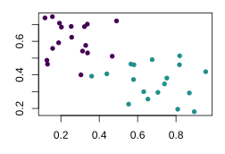
Line chart — when you have repeated measurements of a continuous variable over an ordered variable, almost always time. The line itself implies continuity/trend, so only connect points that have a real ordering — never use a line chart to connect categorical groups that have no inherent order (e.g., don’t draw a line connecting “Site A -> Site B -> Site C” unless sites have a genuine sequence).
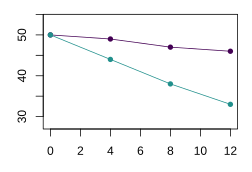
Kaplan-Meier curve — specifically for time-to-event data with censoring (patients who left the study, were still alive at last follow-up, etc.). Never substitute a boxplot of raw “time to event” values — that approach silently drops or mishandles censored observations and will give you the wrong answer, not just an ugly plot.
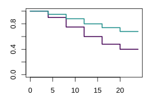
Forest plot — when you want to compare an effect size (hazard ratio, odds ratio, mean difference) and its confidence interval across several subgroups or studies at once. This is preferred over a table of numbers when there are more than ~4-5 subgroups, since the visual pattern (which subgroups cross the null line) is much faster to parse than scanning a column of p-values.
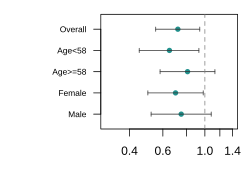
Stacked/grouped bar chart — for categorical × categorical data, such as smoking status composition across trial sites. Use stacked when you care about the whole (100% composition) and have few categories (2–3 is comfortable, 4 is pushing it). Use grouped (bars side-by-side rather than stacked) when you want the reader to compare one specific category’s height precisely across groups — stacking anything after the first segment makes precise comparison hard, since the baseline for the second-and-later segments keeps moving.
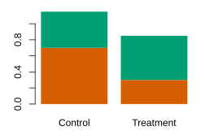
Heatmap — for high-dimensional continuous data (e.g., gene expression across samples, correlation matrices). Pair with hierarchical clustering on rows/columns, and use a diverging colormap (not viridis) if the data has a meaningful zero point (e.g., log fold-change, correlation coefficients from -1 to 1).
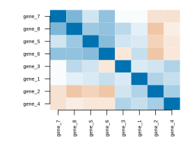
A note on PCA / dimensionality-reduction plots specifically
Since many of you work with omics or high-dimensional feature data, a few PCA-specific notes that go beyond “just use a scatter plot”:
- Always report % variance explained in the axis label for the PCs you’re plotting — this is standard practice and reviewers will ask for it if it’s missing
- Color points by a meaningful metadata variable (condition, batch, cell type) — an uncolored PCA plot answers “is there structure?” but not “what’s driving it?”
- If you’re checking for batch effects, plot the same PCA colored by batch separately from the plot colored by biological condition — overlaying both as different shapes/colors in one panel usually gets visually noisy past 2 categorical variables
- Consider a scree plot (bar chart of % variance explained per PC) as a companion figure, so readers can judge whether PC1 vs. PC2 captures most of the structure or whether later PCs still matter
3. Plot Parameters: A Quick Reference
Before diving into specific plot types, it’s worth having one place that maps out the common visual parameters you’ll adjust across almost every plot in this document. Once you know these, you can apply them to any plot type — they’re not specific to boxplots or scatter plots, they’re general-purpose knobs for presentation quality.
Quick reference table
| Parameter | R (ggplot2) | Python (matplotlib/seaborn) | Typical publication value |
|---|---|---|---|
| Point size | size = in geom_point() |
s= (matplotlib) / size= (sns) |
2-4 (small multi-panel), 4-8 (single figure) |
| Point shape/type | shape = (0-25, numeric codes) |
marker= (‘o’, ‘s’, ‘^’, ‘D’, etc.) |
Keep consistent per group across a paper |
| Point/line transparency | alpha = (0-1) |
alpha= (0-1) |
0.5-0.8 for overlapping points; 1.0 for lines |
| Line type | linetype = (‘solid’,‘dashed’,‘dotted’) |
linestyle= (‘-’, ‘–’, ‘:’, ‘-.’) |
Solid for primary data, dashed for reference/threshold lines |
| Line width | linewidth = (ggplot2 >= 3.4) |
linewidth= (or lw=) |
0.5-1 for gridlines/reference, 1.5-2.5 for data lines |
| Figure size | ggsave(width=, height=, units="in") |
plt.subplots(figsize=(w,h)) |
Match journal column width: ~3.5in (1-col) or ~7in (2-col) |
| Font size (base) | theme_minimal(base_size = 12) |
plt.rcParams['font.size'] = 12 |
8-10pt at final print size |
| Axis title size | theme(axis.title = element_text(size=)) |
ax.set_xlabel(..., fontsize=) |
Slightly larger than axis tick labels |
| Legend position | theme(legend.position = "top"/"right"/"none") |
ax.legend(loc=, bbox_to_anchor=) |
“none” if only 1 group; “right” or “top” for 2+ |
| DPI (export) | ggsave(dpi = 300) |
plt.savefig(dpi=300) |
300 minimum; 600 for line art/vector-heavy figures |
Worked example: the same scatter plot, three parameter presets
To make this concrete, here’s one scatter plot rendered three different ways — purely by changing parameters, not the underlying data or plot type. This is meant to show how much these settings change the feel of a figure.
Preset A — “exploratory” (what you’d use while analyzing, not for publication): large default points, no transparency, default font sizes, legend wherever matplotlib/ggplot2 puts it by default.
Preset B — “presentation” (for a slide deck or talk): larger points and fonts for visibility from the back of a room, bolder lines, legend moved to a clear position.
Preset C — “publication” (for a journal figure): smaller, restrained point size appropriate for a dense figure, muted transparency to handle overlapping points, conservative font sizing matched to the target print column width, legend placed to not waste horizontal space.
R — three presets of the same plot
library(patchwork)
preset_exploratory <- ggplot(clinical_r, aes(biomarker, followup_score, color = arm)) +
geom_point() +
labs(title = "Exploratory\n(defaults)") +
theme(plot.title = element_text(size = 10))
preset_presentation <- ggplot(clinical_r, aes(biomarker, followup_score, color = arm)) +
geom_point(size = 4, alpha = 0.8) +
scale_color_viridis_d(end = 0.8) +
labs(title = "Presentation\n(slide-ready)") +
theme_minimal(base_size = 13) +
theme(legend.position = "bottom", plot.title = element_text(size = 12))
preset_publication <- ggplot(clinical_r, aes(biomarker, followup_score, color = arm)) +
geom_point(size = 1.8, alpha = 0.6) +
scale_color_viridis_d(end = 0.8) +
labs(title = "Publication\n(print-ready)", color = NULL) +
theme_minimal(base_size = 9) +
theme(
plot.title = element_text(size = 10),
legend.position = "inside",
legend.position.inside = c(0.8, 0.9),
legend.background = element_rect(fill = "white", color = NA),
legend.key.size = unit(0.35, "cm"),
legend.text = element_text(size = 7)
)
# Use patchwork's | operator to place three separate ggplot objects
# side-by-side. Plain "+" only adds layers/components to ONE ggplot object,
# it cannot combine multiple separate plots -- that's what patchwork is for.
# If the three panels still look cramped/overlapping in your render, increase
# fig-width further (each panel needs roughly 4+ inches of width to have
# room for its title, axis labels, and legend without crowding).
preset_exploratory | preset_presentation | preset_publication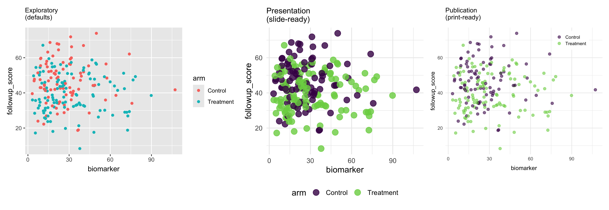
Python — three presets of the same plot
import matplotlib.pyplot as plt
import seaborn as sns
fig, axes = plt.subplots(1, 3, figsize=(10, 4))
# Exploratory
sns.scatterplot(data=clinical_py, x="biomarker", y="followup_score", hue="arm", ax=axes[0])
axes[0].set_title("Exploratory (defaults)")
# Presentation
sns.scatterplot(data=clinical_py, x="biomarker", y="followup_score", hue="arm",
s=120, alpha=0.8, palette="viridis", ax=axes[1])
axes[1].set_title("Presentation (slide-ready)", fontsize=14)
axes[1].tick_params(labelsize=12)
axes[1].legend(loc="upper center", bbox_to_anchor=(0.5, 1.25), ncol=2, fontsize=10)
# Publication
sns.scatterplot(data=clinical_py, x="biomarker", y="followup_score", hue="arm",
s=25, alpha=0.6, palette="viridis", ax=axes[2])
axes[2].set_title("Publication (print-ready)", fontsize=9)
axes[2].tick_params(labelsize=7)
axes[2].set_xlabel(axes[2].get_xlabel(), fontsize=8)
axes[2].set_ylabel(axes[2].get_ylabel(), fontsize=8)
axes[2].legend(fontsize=6, markerscale=0.6, title=None, loc="upper right", frameon=True)
sns.despine()
plt.tight_layout()
plt.show()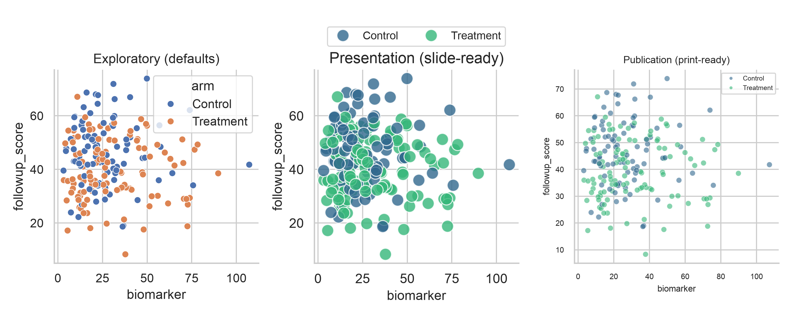
Teaching note: the “publication” preset’s font sizes look almost too small on your laptop screen — that’s expected and correct. Remember from the typography discussion: a figure that looks appropriately sized on a 15-inch laptop screen will almost always look oversized once placed in an actual journal column, because your screen is showing the plot at a much larger physical size than it will appear in print. Always sanity-check by exporting and viewing the actual output file at a realistic size, not just trusting how it looks in Positron’s Plots pane.
A note on the legend choice above: some publication figures do drop the legend entirely — relying on the figure caption to explain what each color represents, or because color is redundant with another visual cue (e.g., panel position or a text label). That’s a legitimate space-saving technique in the right context. But it’s a confusing default for this specific teaching example, since without a legend a reader has no way to know what purple vs. teal actually means. A publication-ready figure still needs to communicate what its colors mean — it just does so efficiently (small, well-placed, minimal padding), rather than by omitting the legend altogether. That’s why the publication preset above keeps a compact, in-plot legend rather than removing it.
A note on consistency across a paper
Whatever preset you land on, the real rule is: use the exact same parameters across every figure in a single paper. If Figure 1 uses point size 2 and Figure 3 uses point size 5, a careful reviewer will notice the inconsistency even if neither figure is wrong on its own. A simple way to enforce this in code: define your preset once as a reusable theme/function, and apply it everywhere.
# Define once...
my_pub_theme <- theme_minimal(base_size = 9) + theme(legend.position = "none")
# ...reuse everywhere
ggplot(clinical_r, aes(biomarker, followup_score)) + geom_point(size = 1.8, alpha = 0.6) + my_pub_theme# Define once...
def apply_pub_style(ax, fontsize=9):
ax.tick_params(labelsize=fontsize - 1)
ax.set_xlabel(ax.get_xlabel(), fontsize=fontsize)
ax.set_ylabel(ax.get_ylabel(), fontsize=fontsize)
ax.set_title(ax.get_title(), fontsize=fontsize)
# ...reuse everywhere
fig, ax = plt.subplots()
sns.scatterplot(data=clinical_py, x="biomarker", y="followup_score", s=25, alpha=0.6, ax=ax)
apply_pub_style(ax)4. Table 1: Summary Statistics with Group Comparison Tests
Almost every clinical paper opens with a “Table 1” — baseline characteristics by group, with an appropriate statistical test per variable type:
- Continuous variables (age, biomarker): t-test or Wilcoxon/Mann-Whitney, depending on normality assumptions
- Categorical variables (sex, smoker status, responder): chi-square test, or Fisher’s exact test when expected cell counts are small
R — gtsummary (recommended)
gtsummary automatically picks a sensible default test per variable type and produces a publication-ready table.
library(gtsummary)
clinical_r %>%
select(arm, age, sex, smoker, biomarker, response_label) %>%
tbl_summary(
by = arm,
statistic = list(
all_continuous() ~ "{mean} ({sd})",
all_categorical() ~ "{n} ({p}%)"
),
digits = all_continuous() ~ 1
) %>%
add_p(
test = list(
all_continuous() ~ "t.test",
all_categorical() ~ "chisq.test"
)
) %>%
add_overall() %>%
bold_labels()| Characteristic | Overall N = 2001 |
Control N = 891 |
Treatment N = 1111 |
p-value2 |
|---|---|---|---|---|
| age | 57.4 (11.5) | 57.1 (11.2) | 57.7 (11.8) | 0.7 |
| sex | 0.8 | |||
| Female | 107 (54%) | 46 (52%) | 61 (55%) | |
| Male | 93 (47%) | 43 (48%) | 50 (45%) | |
| smoker | 0.7 | |||
| Current | 42 (21%) | 18 (20%) | 24 (22%) | |
| Former | 54 (27%) | 22 (25%) | 32 (29%) | |
| Never | 104 (52%) | 49 (55%) | 55 (50%) | |
| biomarker | 29.2 (19.2) | 26.9 (17.3) | 31.1 (20.5) | 0.12 |
| response_label | 0.003 | |||
| No Response | 110 (55%) | 60 (67%) | 50 (45%) | |
| Response | 90 (45%) | 29 (33%) | 61 (55%) | |
| 1 Mean (SD); n (%) | ||||
| 2 Welch Two Sample t-test; Pearson’s Chi-squared test | ||||
Teaching note:
add_p()lets you specify the test per variable explicitly. If any categorical variable has small expected cell counts, swap in"fisher.test"for that variable instead of"chisq.test".
R — manual approach (if you want full control over which test runs)
# Continuous: t-test (or wilcox.test if non-normal)
t_test_age <- t.test(age ~ arm, data = clinical_r)
wilcox_biomarker <- wilcox.test(biomarker ~ arm, data = clinical_r)
# Categorical: chi-square, with automatic fallback logic
sex_table <- table(clinical_r$sex, clinical_r$arm)
chisq_check <- chisq.test(sex_table)
if (any(chisq_check$expected < 5)) {
sex_test <- fisher.test(sex_table)
sex_test_name <- "Fisher's exact"
} else {
sex_test <- chisq_check
sex_test_name <- "Chi-square"
}
cat("Age t-test p-value:", round(t_test_age$p.value, 4), "\n")Age t-test p-value: 0.7192 cat("Biomarker Wilcoxon p-value:", round(wilcox_biomarker$p.value, 4), "\n")Biomarker Wilcoxon p-value: 0.2783 cat("Sex test used:", sex_test_name, "- p-value:", round(sex_test$p.value, 4), "\n")Sex test used: Chi-square - p-value: 0.7504 Python — tableone
from tableone import TableOne
columns = ["age", "sex", "smoker", "biomarker", "response_label"]
categorical = ["sex", "smoker", "response_label"]
table1 = TableOne(
clinical_py,
columns=columns,
categorical=categorical,
groupby="arm",
pval=True,
htest_name=True
)
# Printed version (for the rendered HTML document / console output)
print(table1.tabulate(tablefmt="github"))| | | Missing | Overall | Control | Treatment | P-Value | Test |
|-----------------------|-------------|-----------|-------------|-------------|-------------|-----------|----------------|
| n | | | 200 | 89 | 111 | | |
| age, mean (SD) | | 0 | 57.4 (11.5) | 57.1 (11.2) | 57.7 (11.8) | 0.719 | Welch’s T-test |
| sex, n (%) | Female | | 107 (53.5) | 46 (51.7) | 61 (55.0) | 0.75 | Chi-squared |
| | Male | | 93 (46.5) | 43 (48.3) | 50 (45.0) | | |
| smoker, n (%) | Current | | 42 (21.0) | 18 (20.2) | 24 (21.6) | 0.725 | Chi-squared |
| | Former | | 54 (27.0) | 22 (24.7) | 32 (28.8) | | |
| | Never | | 104 (52.0) | 49 (55.1) | 55 (49.5) | | |
| biomarker, mean (SD) | | 0 | 29.2 (19.2) | 26.9 (17.3) | 31.1 (20.5) | 0.12 | Welch’s T-test |
| response_label, n (%) | No Response | | 110 (55.0) | 60 (67.4) | 50 (45.0) | 0.003 | Chi-squared |
| | Response | | 90 (45.0) | 29 (32.6) | 61 (55.0) | | |# DataFrame version (for Positron's Data Viewer / Variables pane)
# TableOne stores the underlying table with a MultiIndex on BOTH the rows
# (variable name, level) and the columns (e.g., ('Grouped by arm', 'Overall')).
# reset_index() on an unnamed row MultiIndex produces generic "level_0",
# "level_1" column names -- naming the index levels first avoids that.
table1_raw = table1.tableone.copy()
table1_raw.index = table1_raw.index.set_names(["Characteristic", "Level"])
table1_df = table1_raw.reset_index()
table1_df.columns = [
'_'.join([str(c) for c in col if c not in ('', 'Grouped by arm')]).strip('_')
for col in table1_df.columns.to_flat_index()
]
# Note: caption text omits "Table 1." since Quarto adds its own table
# numbering/label automatically -- including it in both places duplicates it
# (e.g., "Table 1: Table 1. Baseline Characteristics by Arm").
table1_df.style.set_caption("Baseline Characteristics by Arm")| Characteristic | Level | Missing | Overall | Control | Treatment | P-Value | Test | |
|---|---|---|---|---|---|---|---|---|
| 0 | n | 200 | 89 | 111 | ||||
| 1 | age, mean (SD) | 0 | 57.4 (11.5) | 57.1 (11.2) | 57.7 (11.8) | 0.719 | Welch’s T-test | |
| 2 | sex, n (%) | Female | 107 (53.5) | 46 (51.7) | 61 (55.0) | 0.750 | Chi-squared | |
| 3 | sex, n (%) | Male | 93 (46.5) | 43 (48.3) | 50 (45.0) | |||
| 4 | smoker, n (%) | Current | 42 (21.0) | 18 (20.2) | 24 (21.6) | 0.725 | Chi-squared | |
| 5 | smoker, n (%) | Former | 54 (27.0) | 22 (24.7) | 32 (28.8) | |||
| 6 | smoker, n (%) | Never | 104 (52.0) | 49 (55.1) | 55 (49.5) | |||
| 7 | biomarker, mean (SD) | 0 | 29.2 (19.2) | 26.9 (17.3) | 31.1 (20.5) | 0.120 | Welch’s T-test | |
| 8 | response_label, n (%) | No Response | 110 (55.0) | 60 (67.4) | 50 (45.0) | 0.003 | Chi-squared | |
| 9 | response_label, n (%) | Response | 90 (45.0) | 29 (32.6) | 61 (55.0) |
Two different things, two different views:
table1_dfon its own (no.style) → opens in Positron’s Data Viewer (the spreadsheet-style grid), same as any DataFrame — good for sorting/filtering/inspecting values, but not styled like a publication table.table1_df.style.set_caption(...)as the last line of the cell → renders as a styled HTML table directly in Positron’s Plots/output pane, which is the Python equivalent of whatgt/gtsummarygive you automatically in R. This is the one that will look like a real “Table 1.”If you want both in one run, put
table1_dfon its own line earlier in the cell (so it’s available in Variables/Data Viewer) and keeptable1_df.style...as the final line (so the styled version renders in the output pane) — a cell only auto-displays its last expression, not every line.
Python — manual approach (explicit test selection + Fisher fallback)
from scipy.stats import ttest_ind, mannwhitneyu, chi2_contingency, fisher_exact
ctrl = clinical_py[clinical_py.arm == "Control"]
trt = clinical_py[clinical_py.arm == "Treatment"]
# Continuous: t-test and Mann-Whitney
t_stat, t_p = ttest_ind(ctrl["age"], trt["age"])
u_stat, u_p = mannwhitneyu(ctrl["biomarker"], trt["biomarker"])
# Categorical: chi-square with automatic Fisher fallback for small cells
contingency = pd.crosstab(clinical_py["sex"], clinical_py["arm"])
chi2, chi_p, dof, expected = chi2_contingency(contingency)
if (expected < 5).any():
# Fisher's exact only supports 2x2 tables natively in scipy
odds_ratio, fisher_p = fisher_exact(contingency)
test_used, p_value = "Fisher's exact", fisher_p
else:
test_used, p_value = "Chi-square", chi_p
print(f"Age t-test p-value: {t_p:.4f}")Age t-test p-value: 0.7209print(f"Biomarker Mann-Whitney p-value: {u_p:.4f}")Biomarker Mann-Whitney p-value: 0.2783print(f"Sex test used: {test_used} - p-value: {p_value:.4f}")Sex test used: Chi-square - p-value: 0.7504Teaching note: the rule of thumb — chi-square needs expected cell counts ≥5 in every cell to be reliable; below that, switch to Fisher’s exact. Both code paths above check this automatically rather than assuming.
5. Grammar of Graphics — Scatter Plot
Goal: biomarker (x) vs. follow-up score (y), colored by arm, faceted by site.
R — ggplot2
library(viridis)
p_scatter_r <- ggplot(clinical_r, aes(x = biomarker, y = followup_score, color = arm)) +
geom_point(alpha = 0.7, size = 2) +
geom_smooth(method = "lm", se = TRUE) +
facet_wrap(~site) +
scale_color_viridis_d(end = 0.8) +
labs(
x = "Biomarker Level (ng/mL)",
y = "Follow-up Score",
color = "Arm",
title = "Biomarker vs. Follow-up Score by Site"
) +
theme_minimal(base_size = 12)
p_scatter_r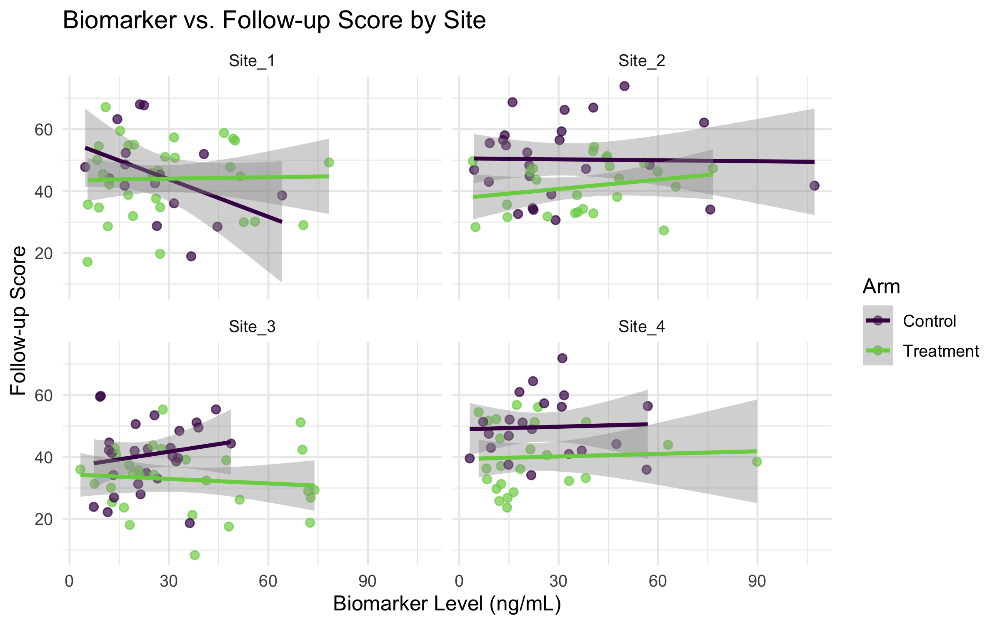
Python — seaborn
import matplotlib.pyplot as plt
import seaborn as sns
sns.set_theme(style="whitegrid", font_scale=1.0)
g = sns.lmplot(
data=clinical_py, x="biomarker", y="followup_score",
hue="arm", col="site", col_wrap=2,
palette="viridis", height=3, aspect=1.2,
scatter_kws={"alpha": 0.7, "s": 30}
)
g.set_axis_labels("Biomarker Level (ng/mL)", "Follow-up Score")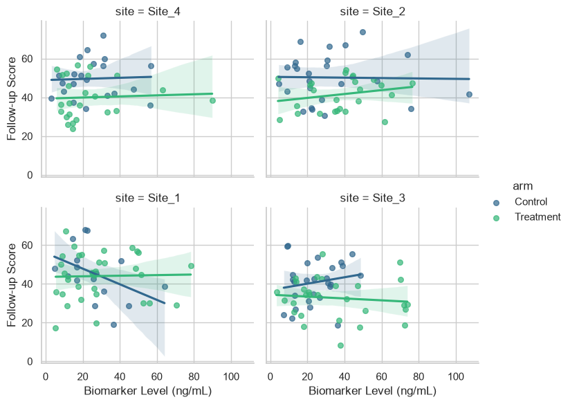
g.fig.suptitle("Biomarker vs. Follow-up Score by Site", y=1.03)
g.fig.subplots_adjust(top=0.90) # reserve space so the title doesn't overlap the top row of facets
plt.show()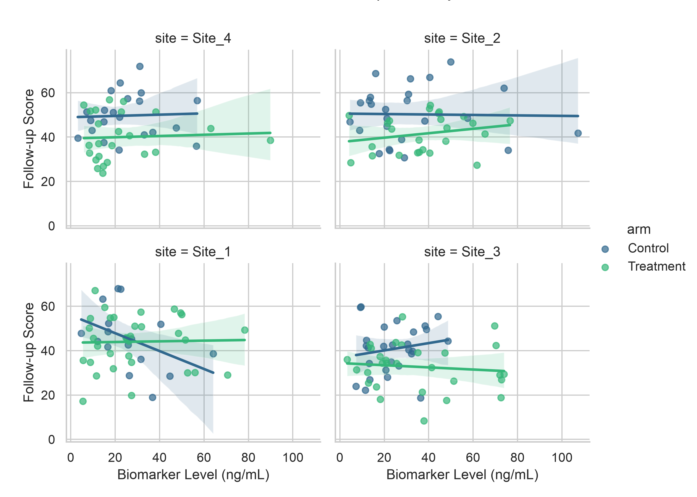
6. Line Chart — Longitudinal / Repeated Measures
Goal: mean score over time by arm, with error bars (SD or SE), a very common figure for tracking a lab value or score across visits.
R — ggplot2
summary_r <- longitudinal_r %>%
group_by(arm, week) %>%
summarise(
mean_score = mean(score),
sd_score = sd(score),
se_score = sd_score / sqrt(n()),
.groups = "drop"
)
ggplot(summary_r, aes(x = week, y = mean_score, color = arm, group = arm)) +
geom_line(linewidth = 1) +
geom_point(size = 2.5) +
geom_errorbar(
aes(ymin = mean_score - se_score, ymax = mean_score + se_score),
width = 0.5
) +
scale_color_viridis_d(end = 0.8) +
labs(
x = "Week",
y = "Mean Score (± SE)",
color = "Arm",
title = "Score Trajectory Over Time by Arm"
) +
theme_minimal(base_size = 12)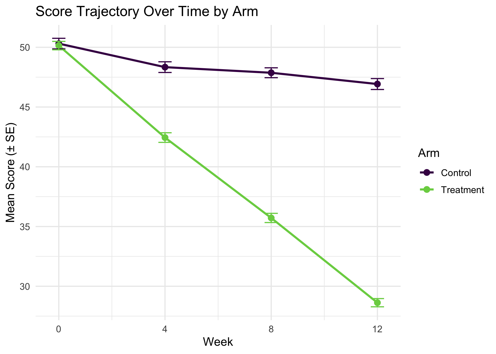
Python — matplotlib/seaborn
summary_py = (
longitudinal_py.groupby(["arm", "week"])["score"]
.agg(mean_score="mean", sd_score="std", n="count")
.reset_index()
)
summary_py["se_score"] = summary_py["sd_score"] / np.sqrt(summary_py["n"])
fig, ax = plt.subplots(figsize=(7, 5))
colors = {"Control": "#440154", "Treatment": "#21908C"}
for arm, color in colors.items():
sub = summary_py[summary_py.arm == arm]
ax.errorbar(
sub["week"], sub["mean_score"], yerr=sub["se_score"],
marker="o", capsize=4, label=arm, color=color, linewidth=2
)
ax.set_xlabel("Week")
ax.set_ylabel("Mean Score (± SE)")
ax.set_title("Score Trajectory Over Time by Arm")
ax.legend(title="Arm")
sns.despine()
plt.tight_layout()
plt.show()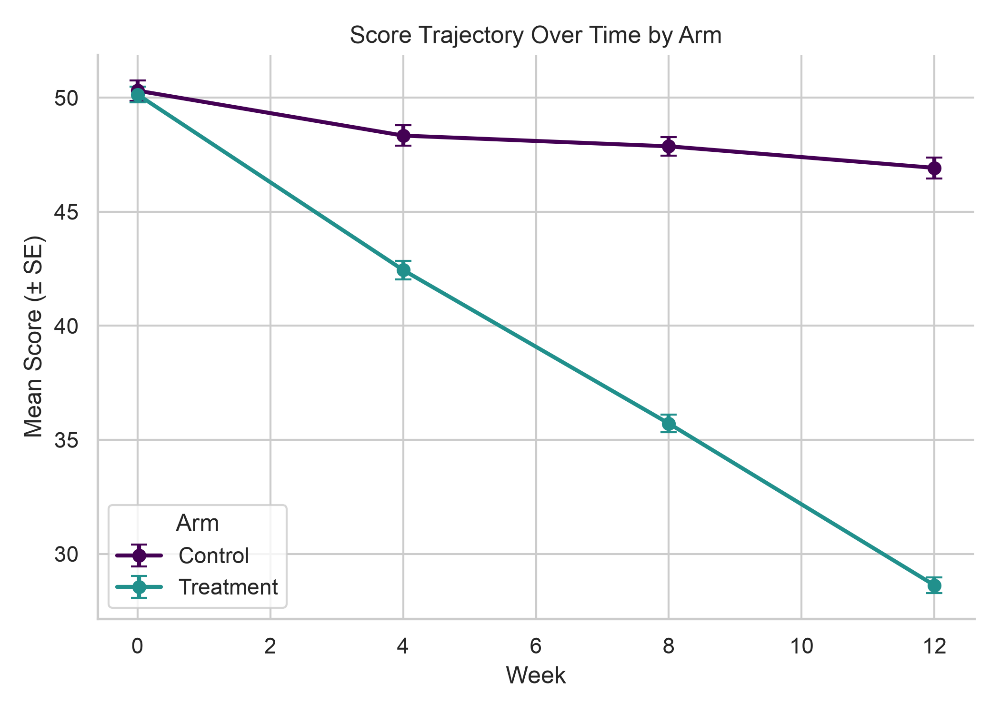
Teaching note: SE vs. SD is a common point of confusion. SD describes spread of individual observations; SE describes uncertainty in the mean estimate and shrinks as sample size grows. Journals vary in which they expect — check author guidelines, and always label which one you plotted.
7. Density Plots
Density plots are a smoothed alternative to histograms — useful when you want to compare distribution shape across groups without the visual clutter of overlapping bars. We’ll build up from a single density plot to multiple overlaid groups to a ridgeline plot for many groups at once.
7.1 Single density plot
R — ggplot2
ggplot(clinical_r, aes(x = biomarker)) +
geom_density(fill = "#3b528b", alpha = 0.6) +
labs(x = "Biomarker Level (ng/mL)", y = "Density", title = "Distribution of Biomarker Level") +
theme_minimal(base_size = 12)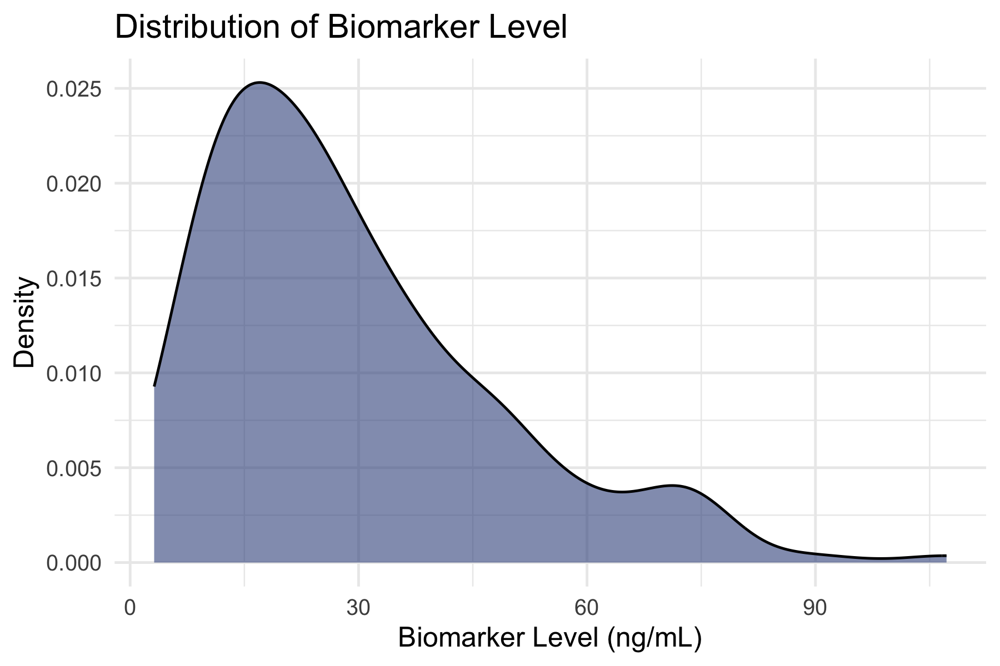
Python — seaborn
fig, ax = plt.subplots(figsize=(6, 4))
sns.kdeplot(data=clinical_py, x="biomarker", fill=True, color="#3b528b", alpha=0.6, ax=ax)
ax.set_xlabel("Biomarker Level (ng/mL)")
ax.set_ylabel("Density")
ax.set_title("Distribution of Biomarker Level")
sns.despine()
plt.tight_layout()
plt.show()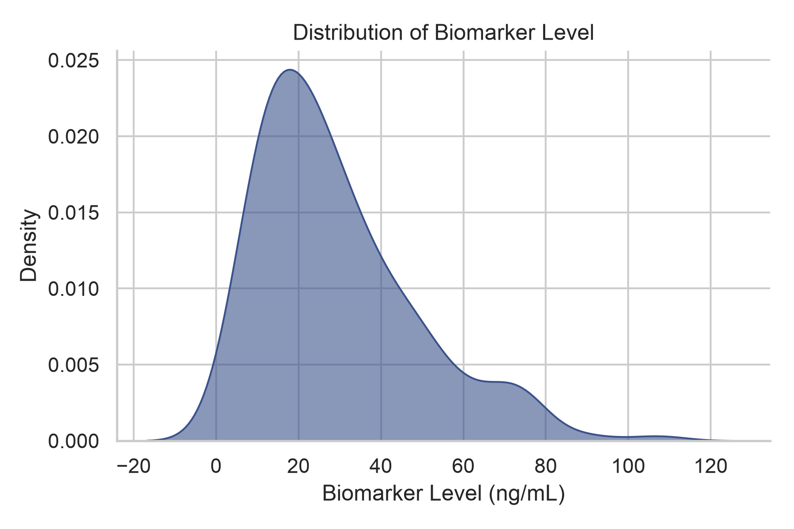
7.2 Multiple-group overlaid density plot
Overlaying densities by group is a quick way to visually check whether two groups’ distributions look meaningfully different — and whether either looks normally distributed, which informs your choice of statistical test (recall Section 4’s t-test vs. Wilcoxon decision).
R — ggplot2
ggplot(clinical_r, aes(x = followup_score, fill = arm)) +
geom_density(alpha = 0.5) +
scale_fill_viridis_d(end = 0.6) +
labs(x = "Follow-up Score", y = "Density", fill = "Arm",
title = "Follow-up Score Distribution by Arm") +
theme_minimal(base_size = 12)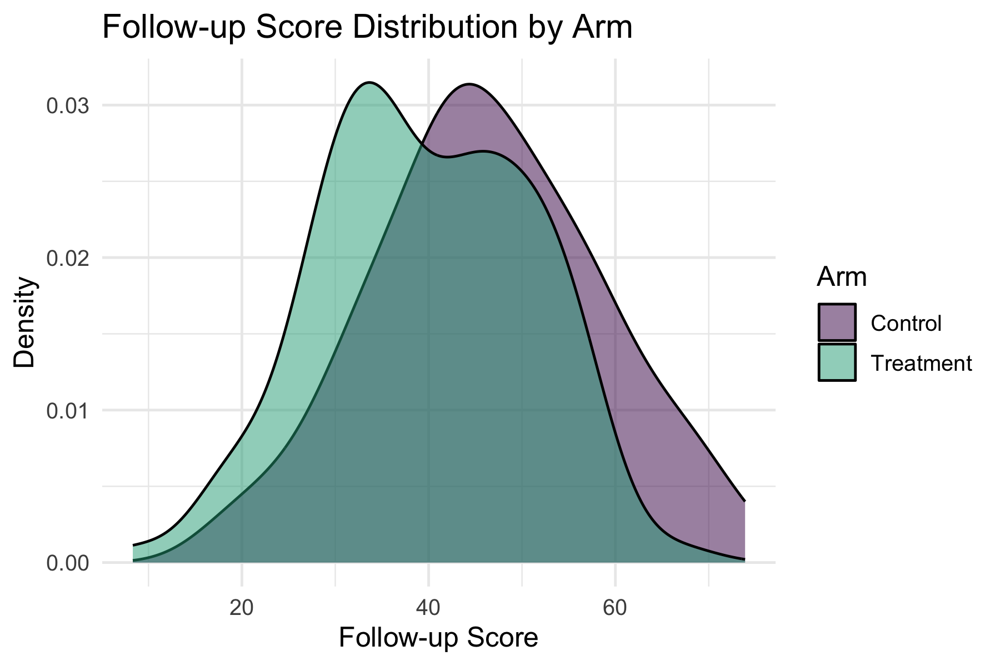
Python — seaborn
fig, ax = plt.subplots(figsize=(6, 4))
sns.kdeplot(data=clinical_py, x="followup_score", hue="arm", fill=True,
common_norm=False, alpha=0.5, palette="viridis", ax=ax)
ax.set_xlabel("Follow-up Score")
ax.set_ylabel("Density")
ax.set_title("Follow-up Score Distribution by Arm")
sns.despine()
plt.tight_layout()
plt.show()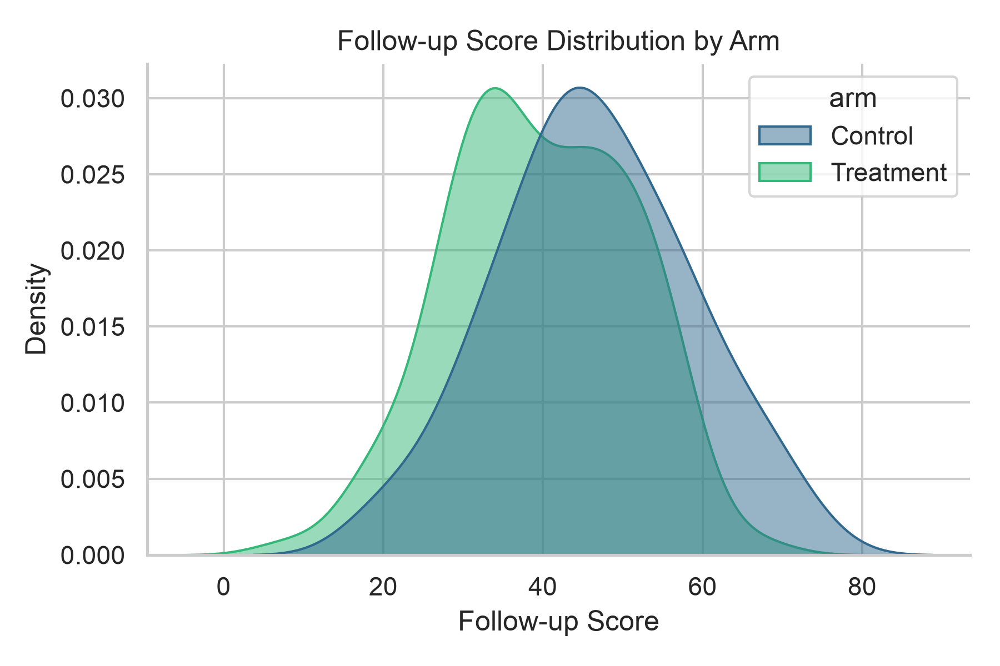
Teaching note: by default,
ggplot2::geom_density()normalizes each group’s curve to integrate to 1 independently, while seaborn’skdeplot()defaults tocommon_norm=True, which normalizes all groups jointly — so a larger group’s curve will appear taller relative to a smaller group’s. Settingcommon_norm=Falseabove makes seaborn match ggplot2’s default behavior (each group’s area under the curve = 1, regardless of sample size). Which behavior you actually want depends on your message:common_norm=False(ggplot2’s default) is right when you want to compare distribution shape regardless of group size;common_norm=Trueis right when you also want the plot to convey relative group size (e.g., “there are more Control patients, so that density mass is visually larger”). Neither is “more correct” — just be explicit in your figure legend about which one you used.
Teaching note: overlaid densities work well for 2-3 groups. Beyond that, overlapping fills become hard to distinguish even with transparency — that’s exactly the problem a ridgeline plot (next) is designed to solve.
7.3 Ridgeline plot (many groups)
A ridgeline plot stacks each group’s density curve on its own baseline, slightly overlapping — this scales much better than overlaid densities once you have more than ~4 groups, e.g., comparing a lab value across many trial sites.
R — ggridges
library(ggridges)
ggplot(clinical_r, aes(x = followup_score, y = site, fill = site)) +
geom_density_ridges(alpha = 0.7, scale = 1.2) +
scale_fill_viridis_d(end = 0.8, direction = -1) +
labs(x = "Follow-up Score", y = NULL, title = "Follow-up Score Distribution by Site") +
theme_minimal(base_size = 12) +
theme(legend.position = "none")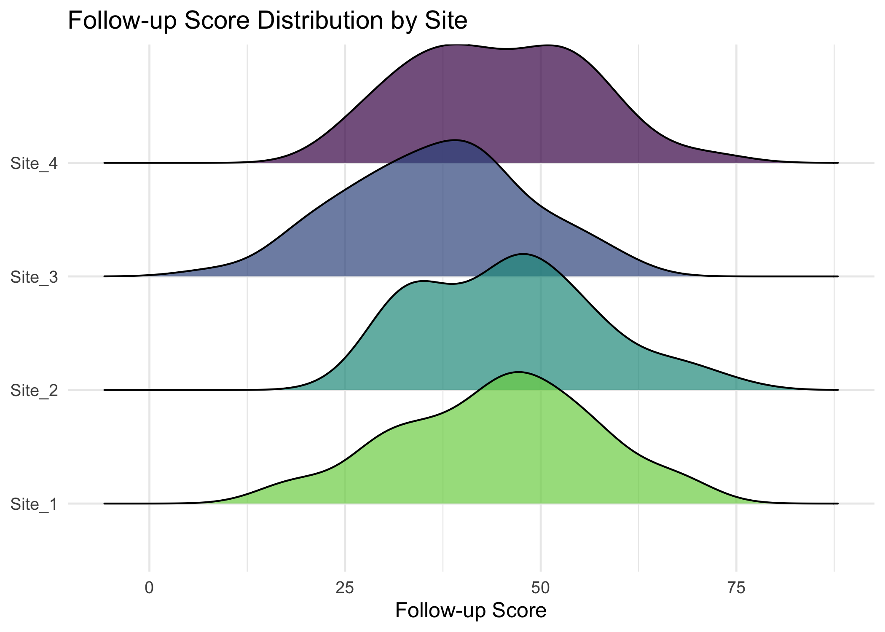
Python — joypy
import joypy
fig, axes = joypy.joyplot(
clinical_py,
by="site",
column="followup_score",
colormap=plt.cm.viridis,
alpha=0.7,
figsize=(7, 5),
title="Follow-up Score Distribution by Site"
)
plt.xlabel("Follow-up Score")
plt.show()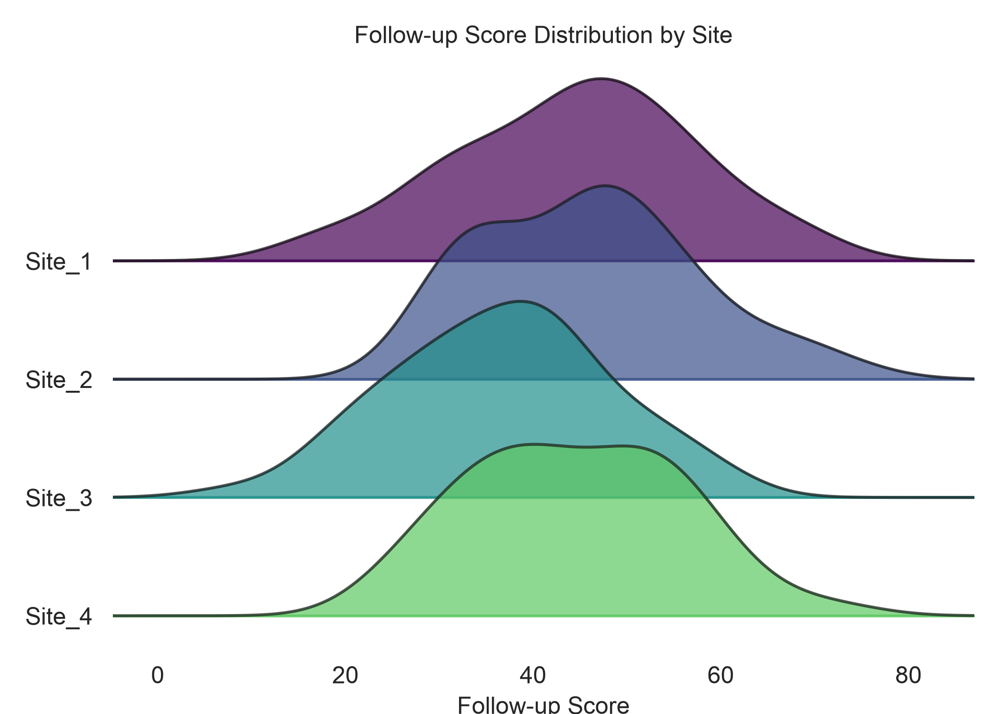
Teaching note:
joypyis a thin, purpose-built wrapper for exactly this plot type in Python — there isn’t a native seaborn/matplotlib ridgeline, so this is one of the few places today where you’ll reach for a smaller, less common package. Ifjoypyisn’t available in someone’s environment, an acceptable fallback is a faceted density plot:sns.FacetGrid(data, row="site").map(sns.kdeplot, "followup_score")— not a true ridgeline (no overlap), but conveys similar information.
8. Kaplan-Meier Survival Curve
R — survival + survminer
library(survival)
library(survminer)
fit <- survfit(Surv(time_months, event) ~ arm, data = clinical_r)
ggsurvplot(
fit,
data = clinical_r,
pval = TRUE,
conf.int = TRUE,
risk.table = TRUE,
palette = c("#440154", "#21908C"),
xlab = "Time (months)",
ylab = "Survival Probability",
legend.title = "Arm",
ggtheme = theme_minimal(base_size = 12)
)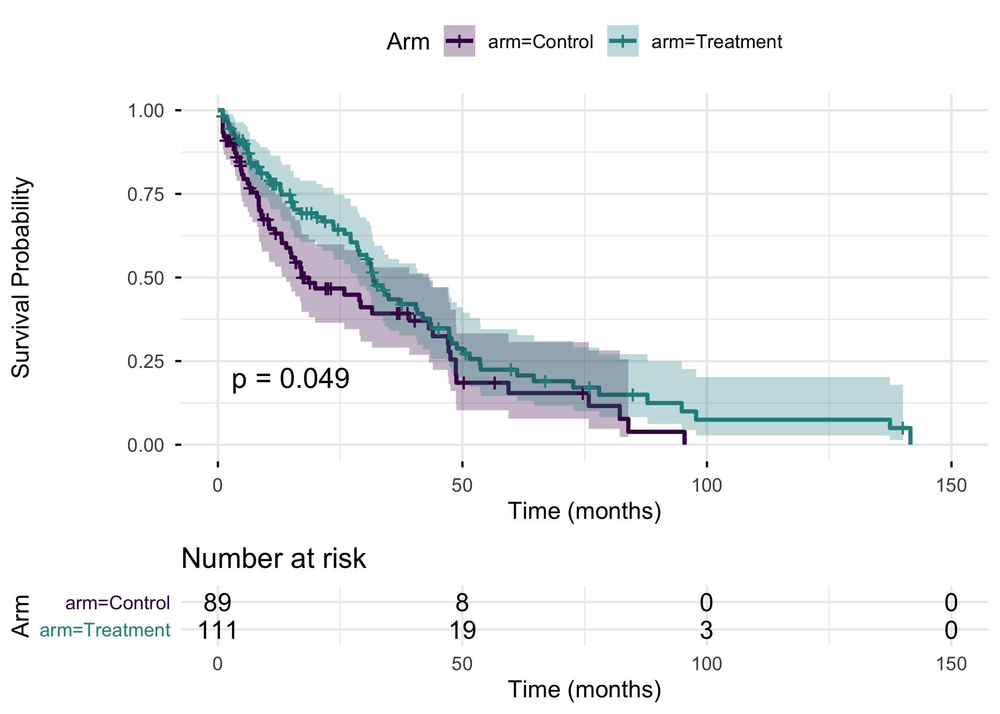
Python — lifelines
from lifelines import KaplanMeierFitter
from lifelines.statistics import logrank_test
fig, ax = plt.subplots(figsize=(7, 5))
kmf = KaplanMeierFitter()
for arm, color in colors.items():
mask = clinical_py["arm"] == arm
kmf.fit(
clinical_py.loc[mask, "time_months"],
clinical_py.loc[mask, "event"],
label=arm
)
kmf.plot_survival_function(ax=ax, color=color, ci_show=True)
ax.set_xlabel("Time (months)")
ax.set_ylabel("Survival Probability")
ax.set_title("Kaplan-Meier Survival Curve by Arm")
sns.despine()
plt.tight_layout()
plt.show()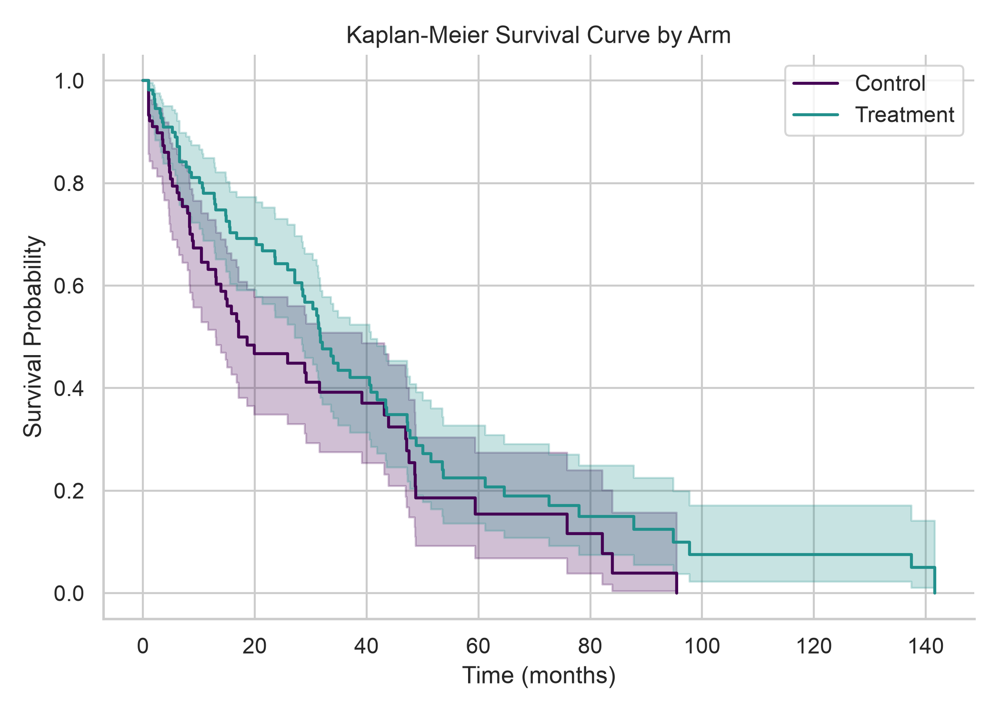
# Log-rank test
ctrl = clinical_py[clinical_py.arm == "Control"]
trt = clinical_py[clinical_py.arm == "Treatment"]
result = logrank_test(
ctrl.time_months, trt.time_months,
event_observed_A=ctrl.event, event_observed_B=trt.event
)
print(f"Log-rank p-value: {result.p_value:.4f}")Log-rank p-value: 0.04909. Forest Plot (Effect Sizes)
We’ll simulate subgroup hazard ratios and build a forest plot — useful for showing treatment effect across subgroups (age group, sex, site).
R — manual ggplot2 build
forest_data_r <- tibble(
subgroup = c("Overall", "Age under 58", "Age 58 plus", "Female", "Male"),
hr = c(0.72, 0.65, 0.81, 0.70, 0.75),
lower = c(0.55, 0.45, 0.58, 0.50, 0.52),
upper = c(0.94, 0.93, 1.13, 0.98, 1.08)
) %>%
mutate(subgroup = fct_rev(fct_inorder(subgroup)))
ggplot(forest_data_r, aes(x = hr, y = subgroup)) +
geom_vline(xintercept = 1, linetype = "dashed", color = "gray50") +
geom_errorbarh(aes(xmin = lower, xmax = upper), height = 0.2) +
geom_point(size = 3, color = "#21908C") +
scale_x_log10() +
labs(
x = "Hazard Ratio (log scale)",
y = NULL,
title = "Treatment Effect by Subgroup"
) +
theme_minimal(base_size = 12)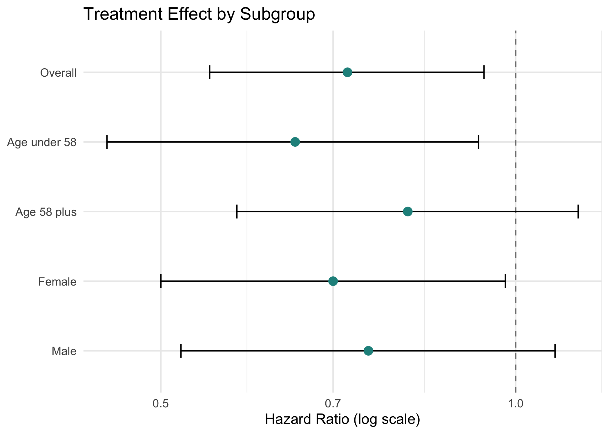
Python — manual matplotlib build
forest_data_py = pd.DataFrame({
"subgroup": ["Overall", "Age under 58", "Age 58 plus", "Female", "Male"],
"hr": [0.72, 0.65, 0.81, 0.70, 0.75],
"lower": [0.55, 0.45, 0.58, 0.50, 0.52],
"upper": [0.94, 0.93, 1.13, 0.98, 1.08],
})
fig, ax = plt.subplots(figsize=(7, 5))
y_pos = np.arange(len(forest_data_py))
ax.errorbar(
forest_data_py["hr"], y_pos,
xerr=[forest_data_py["hr"] - forest_data_py["lower"],
forest_data_py["upper"] - forest_data_py["hr"]],
fmt="o", color="#21908C", ecolor="black", capsize=4
)
ax.axvline(x=1, linestyle="--", color="gray")
ax.set_xscale("log")
ax.set_yticks(y_pos)
ax.set_yticklabels(forest_data_py["subgroup"])
ax.invert_yaxis()
ax.set_xlabel("Hazard Ratio (log scale)")
ax.set_title("Treatment Effect by Subgroup")
sns.despine()
plt.tight_layout()
plt.show()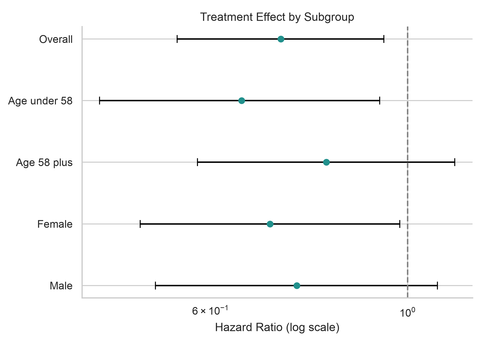
10. ROC Curve and AUC
ROC (Receiver Operating Characteristic) curves evaluate how well a continuous variable or model score discriminates between two outcome classes — common for diagnostic biomarkers (“does this biomarker predict response?”) or classifier evaluation. The Area Under the Curve (AUC) summarizes overall discriminative performance in a single number: 0.5 is no better than chance, 1.0 is perfect discrimination.
We’ll use biomarker to predict responder as a worked example — i.e., “how well does baseline biomarker level predict whether a patient responds?”
R — pROC
library(pROC)
roc_obj_r <- roc(clinical_r$responder, clinical_r$biomarker, quiet = TRUE)
auc_val_r <- auc(roc_obj_r)
ggroc(roc_obj_r, color = "#21908C", linewidth = 1.2) +
geom_abline(slope = 1, intercept = 1, linetype = "dashed", color = "gray50") +
annotate("text", x = 0.3, y = 0.2, label = sprintf("AUC = %.3f", auc_val_r), size = 5) +
labs(x = "Specificity", y = "Sensitivity", title = "ROC Curve: Biomarker Predicting Response") +
theme_minimal(base_size = 12)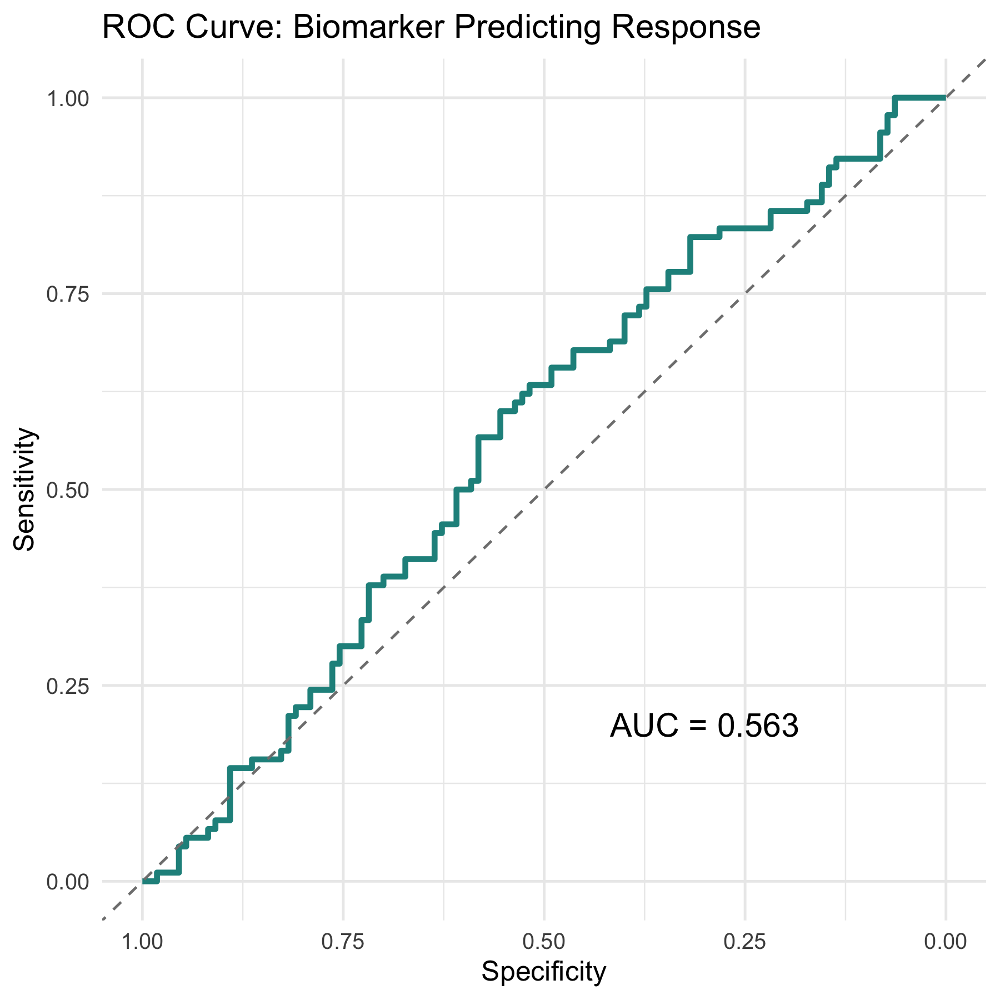
Python — scikit-learn
from sklearn.metrics import roc_curve, auc
fpr, tpr, thresholds = roc_curve(clinical_py["responder"], clinical_py["biomarker"])
roc_auc = auc(fpr, tpr)
fig, ax = plt.subplots(figsize=(6, 6))
ax.plot(fpr, tpr, color="#21908C", linewidth=2.2, label=f"ROC curve (AUC = {roc_auc:.3f})")
ax.plot([0, 1], [0, 1], linestyle="--", color="gray")
ax.set_xlabel("1 - Specificity (False Positive Rate)")
ax.set_ylabel("Sensitivity (True Positive Rate)")
ax.set_title("ROC Curve: Biomarker Predicting Response")
ax.legend(loc="lower right")
sns.despine()
plt.tight_layout()
plt.show()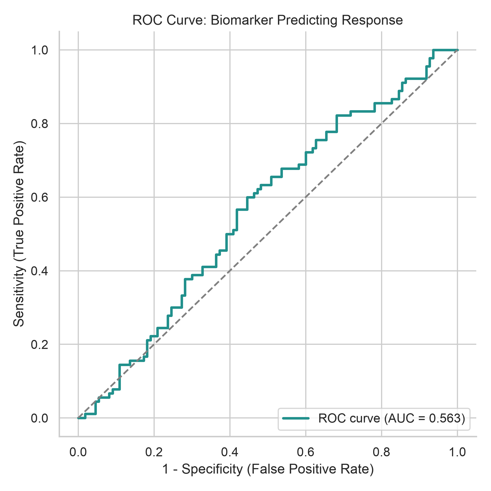
Teaching note: R’s
pROC::ggroc()plots specificity decreasing left-to-right by default (so the plot reads “mirrored” compared to the more common Python/sklearn convention of plotting the false positive rate increasing left-to-right). Both are mathematically identical ROC curves — just check which x-axis convention your target journal expects, and be explicit about which one you’re using in the axis label, since this is a common point of confusion when collaborators compare R and Python output.
Teaching note: AUC alone doesn’t tell you where to set a decision threshold for clinical use — that requires looking at the full sensitivity/specificity tradeoff along the curve, informed by the relative cost of false positives vs. false negatives in your specific clinical context. A high AUC with no discussion of threshold choice is incomplete for a clinical application, even though it’s often sufficient for a purely descriptive “does this biomarker have signal” result.
11. Boxplot Variants with Statistical Annotation
We’ll cover three common variants: boxplot with jittered points, mean ± SD bar chart, and the statistical annotation on each.
11.1 Boxplot with jitter
R — ggpubr
library(ggpubr)
ggplot(clinical_r, aes(x = arm, y = followup_score, fill = arm)) +
geom_boxplot(alpha = 0.7, outlier.shape = NA) +
geom_jitter(width = 0.15, alpha = 0.4) +
stat_compare_means(
method = "wilcox.test", label = "p.format",
label.x = 1.5, hjust = 0.5
) +
scale_fill_viridis_d(end = 0.6) +
labs(x = NULL, y = "Follow-up Score", title = "Follow-up Score by Arm") +
theme_minimal(base_size = 12) +
theme(legend.position = "none")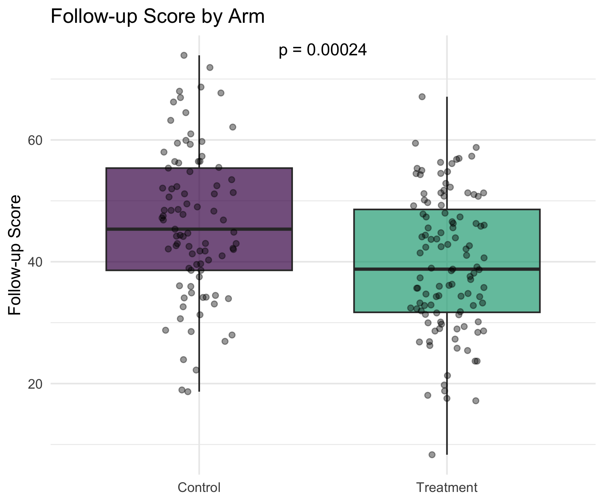
Python — seaborn + statannotations (with fallback)
try:
from statannotations.Annotator import Annotator
HAS_STATANNOTATIONS = True
except ImportError:
HAS_STATANNOTATIONS = False
fig, ax = plt.subplots(figsize=(6, 5))
order = ["Control", "Treatment"]
sns.boxplot(
data=clinical_py, x="arm", y="followup_score",
order=order, palette="viridis", ax=ax
)
sns.stripplot(
data=clinical_py, x="arm", y="followup_score",
order=order, color="black", alpha=0.4, ax=ax
)
if HAS_STATANNOTATIONS:
annotator = Annotator(ax, [("Control", "Treatment")],
data=clinical_py, x="arm", y="followup_score", order=order)
annotator.configure(test="Mann-Whitney", text_format="simple")
annotator.apply_and_annotate()
else:
# Fallback: plain scipy stats + manual annotation
from scipy.stats import mannwhitneyu
grp_control = clinical_py.loc[clinical_py.arm == "Control", "followup_score"]
grp_treatment = clinical_py.loc[clinical_py.arm == "Treatment", "followup_score"]
stat, p_val = mannwhitneyu(grp_control, grp_treatment, alternative="two-sided")
p_label = f"p = {p_val:.4f}" if p_val >= 0.0001 else "p < 0.0001"
y_max = clinical_py["followup_score"].max()
y_range = clinical_py["followup_score"].max() - clinical_py["followup_score"].min()
bar_y = y_max + 0.05 * y_range
text_y = bar_y + 0.02 * y_range
ax.plot([0, 0, 1, 1], [bar_y, bar_y + 0.01 * y_range, bar_y + 0.01 * y_range, bar_y],
lw=1.2, color="black")
ax.text(0.5, text_y, p_label, ha="center", va="bottom", fontsize=10)
ax.set_ylim(top=text_y + 0.08 * y_range)
ax.set_xlabel(None)
ax.set_ylabel("Follow-up Score")
ax.set_title("Follow-up Score by Arm")
sns.despine()
plt.tight_layout()
plt.show()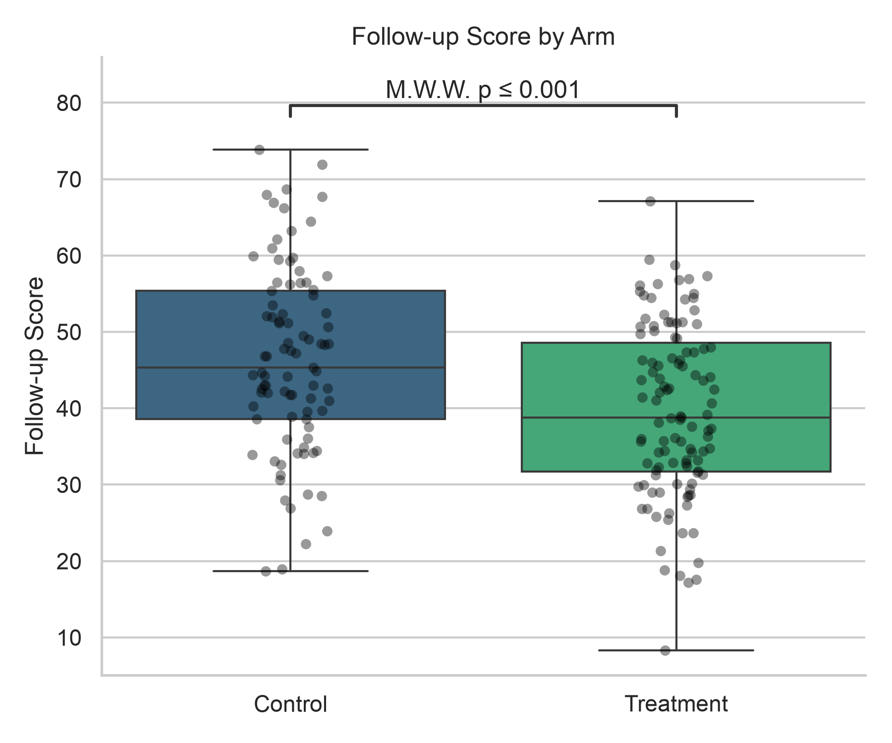
Teaching note: if
statannotationsfails to import or conflicts with a newer seaborn version in someone’s environment, thetry/exceptabove silently falls back to a manual Mann-Whitney test with a hand-drawn significance bracket — same statistical result, no extra dependency. Worth mentioning out loud during the session so people aren’t confused by two different code paths producing the same plot.
11.2 Mean ± SD bar chart with significance stars
Journals often expect significance indicated directly on the plot using asterisks rather than (or in addition to) a printed p-value: * p<0.05, ** p<0.01, *** p<0.001, ns not significant. This mapping is a convention, not a statistical standard — define it explicitly in your figure legend regardless of which thresholds you use.
R — ggplot2 + ggpubr stars
summary_stats_r <- clinical_r %>%
group_by(arm) %>%
summarise(
mean_val = mean(followup_score),
sd_val = sd(followup_score),
.groups = "drop"
)
test_result_r <- wilcox.test(followup_score ~ arm, data = clinical_r)
p_val_r <- test_result_r$p.value
stars_r <- case_when(
p_val_r < 0.001 ~ "***",
p_val_r < 0.01 ~ "**",
p_val_r < 0.05 ~ "*",
TRUE ~ "ns"
)
y_bracket <- max(summary_stats_r$mean_val + summary_stats_r$sd_val) * 1.12
ggplot(summary_stats_r, aes(x = arm, y = mean_val, fill = arm)) +
geom_col(alpha = 0.7, width = 0.6) +
geom_errorbar(aes(ymin = mean_val - sd_val, ymax = mean_val + sd_val), width = 0.2) +
geom_jitter(data = clinical_r, aes(x = arm, y = followup_score),
width = 0.1, alpha = 0.3, inherit.aes = FALSE) +
annotate("segment", x = 1, xend = 2, y = y_bracket, yend = y_bracket) +
annotate("text", x = 1.5, y = y_bracket * 1.03, label = stars_r, size = 6) +
scale_fill_viridis_d(end = 0.8) +
labs(x = NULL, y = "Follow-up Score (Mean \u00b1 SD)", title = "Mean Follow-up Score by Arm") +
theme_minimal(base_size = 12) +
theme(legend.position = "none")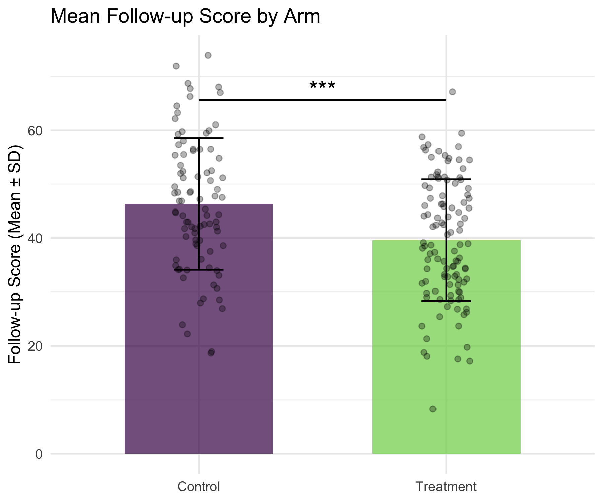
Teaching note:
ggpubr::stat_compare_means(label = "p.signif")can do this automatically in one line instead of the manualannotate()calls above — the manual version is shown here so you can see exactly how the star thresholds and bracket position are computed, which is useful once you need to customize it (e.g., different thresholds, multiple comparisons).
Python — matplotlib + manual stars
from scipy.stats import mannwhitneyu
summary_stats_py = (
clinical_py.groupby("arm")["followup_score"]
.agg(mean_val="mean", sd_val="std")
.reset_index()
)
grp_control = clinical_py.loc[clinical_py.arm == "Control", "followup_score"]
grp_treatment = clinical_py.loc[clinical_py.arm == "Treatment", "followup_score"]
stat, p_val = mannwhitneyu(grp_control, grp_treatment, alternative="two-sided")
def p_to_stars(p):
if p < 0.001: return "***"
elif p < 0.01: return "**"
elif p < 0.05: return "*"
else: return "ns"
stars_py = p_to_stars(p_val)
fig, ax = plt.subplots(figsize=(6, 5))
x_pos = np.arange(len(summary_stats_py))
ax.bar(x_pos, summary_stats_py["mean_val"], yerr=summary_stats_py["sd_val"], capsize=6,
color=["#440154", "#21908C"], alpha=0.7, width=0.6)
for i, arm in enumerate(summary_stats_py["arm"]):
vals = clinical_py.loc[clinical_py.arm == arm, "followup_score"]
jitter = np.random.normal(0, 0.04, size=len(vals))
ax.scatter(np.full(len(vals), i) + jitter, vals, color="black", alpha=0.3, s=15)
y_bracket = (summary_stats_py["mean_val"] + summary_stats_py["sd_val"]).max() * 1.12
ax.plot([0, 0, 1, 1], [y_bracket, y_bracket*1.02, y_bracket*1.02, y_bracket], lw=1.2, color="black")
ax.text(0.5, y_bracket * 1.04, stars_py, ha="center", va="bottom", fontsize=14)
ax.set_xticks(x_pos)
ax.set_xticklabels(summary_stats_py["arm"])
ax.set_ylabel("Follow-up Score (Mean ± SD)")
ax.set_title("Mean Follow-up Score by Arm")
_ = ax.set_ylim(top=y_bracket * 1.15)
sns.despine()
plt.tight_layout()
plt.show()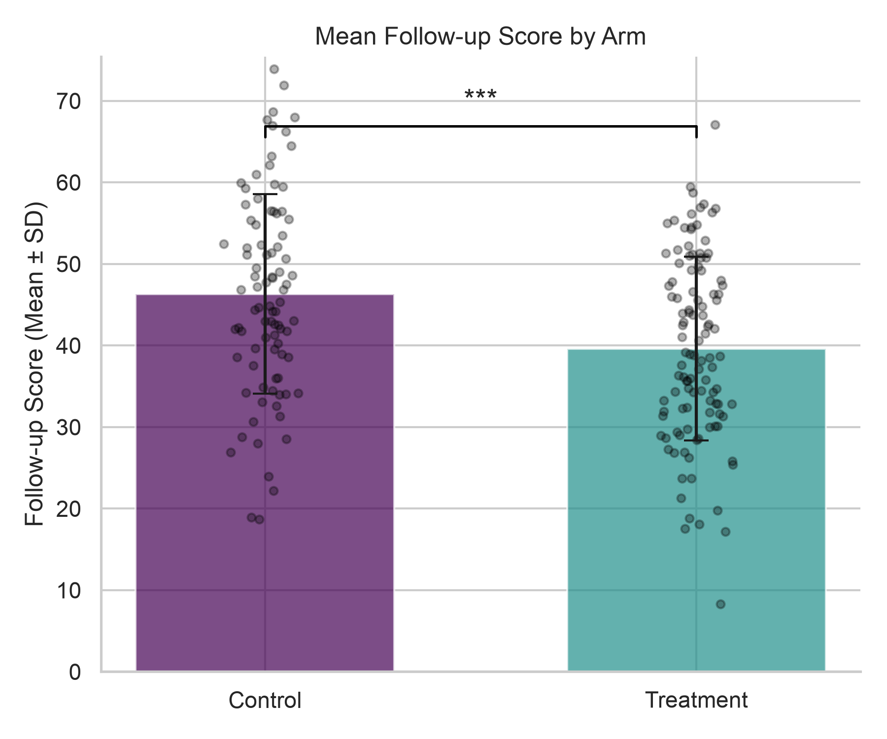
Teaching note: star thresholds (
*,**,***) are a widely used convention but not universal — some journals want exact p-values instead, some want different thresholds. Always state your thresholds in the figure legend (e.g., “*p<0.05, **p<0.01, ***p<0.001, Mann-Whitney U test”).
11.3 Three-group bar chart with ANOVA + pairwise comparisons
When comparing 3 or more groups, a single Mann-Whitney/t-test isn’t appropriate — you need an omnibus test (ANOVA, or Kruskal-Wallis for non-normal data) followed by corrected pairwise comparisons if the omnibus test is significant. Here we compare followup_score across site (4 groups).
Note on the synthetic data:
Site_3has a real, deliberately engineered effect baked into the data generation step in Section 1 — patients at Site_3 have a lower averagefollowup_scorethan the other three sites, which are otherwise similar to each other. This is so the ANOVA/pairwise example below actually has something significant to find; with purely random, effect-free synthetic data, all 4 sites would be statistically indistinguishable and the pairwise-comparison plot would have no brackets to show, which makes for a poor teaching example. In your own real data, you obviously won’t know the answer in advance — that’s the point of running the test.
R — ggplot2 + ggpubr (ANOVA + Tukey HSD pairwise)
# Omnibus test: one-way ANOVA across all 4 sites
anova_model <- aov(followup_score ~ site, data = clinical_r)
anova_summary <- summary(anova_model)
cat("ANOVA p-value:", format.pval(anova_summary[[1]][["Pr(>F)"]][1], digits = 4), "\n")ANOVA p-value: 0.0001391 # Pairwise comparisons with Tukey's HSD (controls family-wise error rate)
tukey_result <- TukeyHSD(anova_model)
print(tukey_result) Tukey multiple comparisons of means
95% family-wise confidence level
Fit: aov(formula = followup_score ~ site, data = clinical_r)
$site
diff lwr upr p adj
Site_2-Site_1 1.45001761 -4.600979 7.501014 0.9252842
Site_3-Site_1 -7.85262526 -13.740993 -1.964257 0.0037320
Site_4-Site_1 0.07332795 -6.141827 6.288483 0.9999897
Site_3-Site_2 -9.30264287 -15.159522 -3.445764 0.0003293
Site_4-Site_2 -1.37668966 -7.562020 4.808640 0.9389513
Site_4-Site_3 7.92595321 1.899625 13.952281 0.0043829# Build pairwise comparison list for ggpubr annotation
site_levels <- levels(factor(clinical_r$site))
comparisons_list <- combn(site_levels, 2, simplify = FALSE)
ggplot(clinical_r, aes(x = site, y = followup_score, fill = site)) +
geom_boxplot(alpha = 0.7, outlier.shape = NA) +
geom_jitter(width = 0.15, alpha = 0.3) +
stat_compare_means(
method = "anova",
label.y = max(clinical_r$followup_score) * 1.5,
label.x = (length(site_levels) + 1) / 2,
hjust = 0.5
) +
stat_compare_means(
comparisons = comparisons_list,
method = "t.test",
label = "p.signif",
step.increase = 0.08,
hide.ns = TRUE
) +
scale_fill_viridis_d(end = 0.8) +
labs(x = NULL, y = "Follow-up Score", title = "Follow-up Score by Site") +
theme_minimal(base_size = 12) +
theme(legend.position = "none")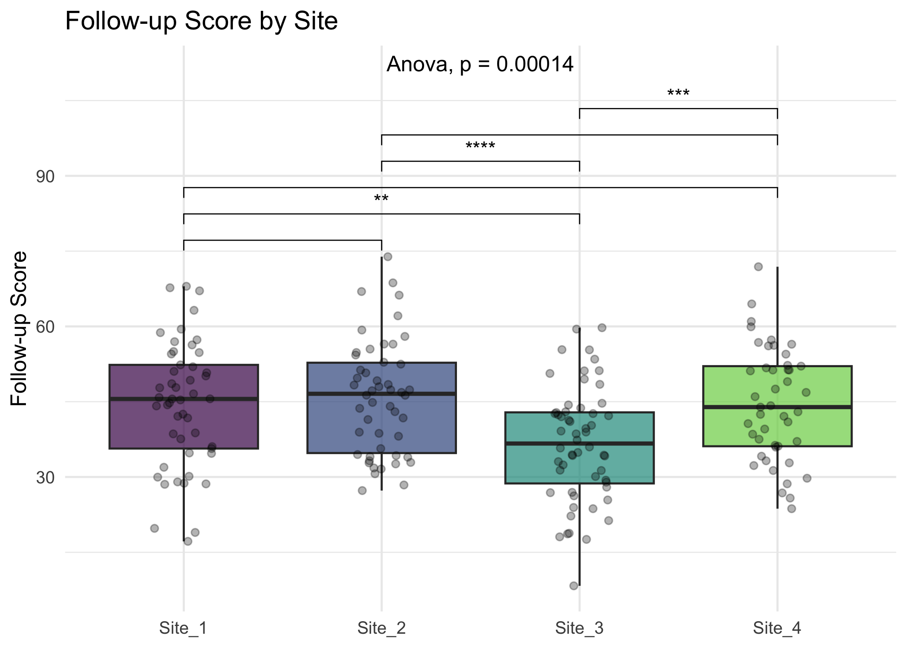
Teaching note:
hide.ns = TRUEhides brackets for non-significant pairwise comparisons, which keeps a 4-group plot (6 possible pairs) from becoming visually cluttered. Tukey’s HSD is one standard way to correct for multiple comparisons;stat_compare_means’s pairwiset.testcalls above are uncorrected by default — for a rigorous figure, extract corrected p-values fromtukey_resultinstead and map them to custom labels if a reviewer will scrutinize multiple-comparison correction.
Python — matplotlib + scipy (ANOVA + Tukey HSD pairwise)
from scipy.stats import f_oneway
from statsmodels.stats.multicomp import pairwise_tukeyhsd
import itertools
sites = sorted(clinical_py["site"].unique())
site_groups = [clinical_py.loc[clinical_py.site == s, "followup_score"] for s in sites]
# Omnibus test: one-way ANOVA across all 4 sites
f_stat, anova_p = f_oneway(*site_groups)
print(f"ANOVA p-value: {anova_p:.4f}")ANOVA p-value: 0.0001# Pairwise comparisons with Tukey's HSD (controls family-wise error rate)
tukey = pairwise_tukeyhsd(
endog=clinical_py["followup_score"],
groups=clinical_py["site"],
alpha=0.05
)
print(tukey.summary()) Multiple Comparison of Means - Tukey HSD, FWER=0.05
=====================================================
group1 group2 meandiff p-adj lower upper reject
-----------------------------------------------------
Site_1 Site_2 1.45 0.9253 -4.601 7.501 False
Site_1 Site_3 -7.8526 0.0037 -13.741 -1.9643 True
Site_1 Site_4 0.0733 1.0 -6.1418 6.2885 False
Site_2 Site_3 -9.3026 0.0003 -15.1595 -3.4458 True
Site_2 Site_4 -1.3767 0.939 -7.562 4.8086 False
Site_3 Site_4 7.926 0.0044 1.8996 13.9523 True
-----------------------------------------------------# Extract Tukey results into a lookup for star annotation
tukey_df = pd.DataFrame(
data=tukey._results_table.data[1:],
columns=tukey._results_table.data[0]
)
def p_to_stars(p):
if p < 0.001: return "***"
elif p < 0.01: return "**"
elif p < 0.05: return "*"
else: return None # hide non-significant brackets
fig, ax = plt.subplots(figsize=(7, 5))
order = sites
sns.boxplot(data=clinical_py, x="site", y="followup_score", order=order, palette="viridis", ax=ax)<Axes: xlabel='site', ylabel='followup_score'>sns.stripplot(data=clinical_py, x="site", y="followup_score", order=order, color="black", alpha=0.3, ax=ax)<Axes: xlabel='site', ylabel='followup_score'># Annotate ANOVA result at the top
y_max = clinical_py["followup_score"].max()
ax.text(
(len(order) - 1) / 2, y_max * 1.3, f"ANOVA p = {anova_p:.4f}",
ha="center", fontsize=10
)Text(1.5, 96.05869031988367, 'ANOVA p = 0.0001')# Add significant pairwise brackets only (keeps plot readable)
bracket_y = y_max * 1.05
step = (y_max * 0.08)
for _, row in tukey_df.iterrows():
stars = p_to_stars(row["p-adj"])
if stars is None:
continue
i, j = order.index(row["group1"]), order.index(row["group2"])
ax.plot([i, i, j, j], [bracket_y, bracket_y+step*0.2, bracket_y+step*0.2, bracket_y], lw=1, color="black")
ax.text((i+j)/2, bracket_y + step*0.25, stars, ha="center", fontsize=12)
bracket_y += step[<matplotlib.lines.Line2D object at 0x314074250>]
Text(1.0, 79.06369126328886, '**')
[<matplotlib.lines.Line2D object at 0x16f6ee250>]
Text(1.5, 84.974995282974, '***')
[<matplotlib.lines.Line2D object at 0x16f68e610>]
Text(2.5, 90.88629930265915, '**')_ = ax.set_xlabel(None)
_ = ax.set_ylabel("Follow-up Score")
_ = ax.set_title("Follow-up Score by Site")
_ = ax.set_ylim(top=bracket_y + step)
sns.despine()
plt.tight_layout()
plt.show()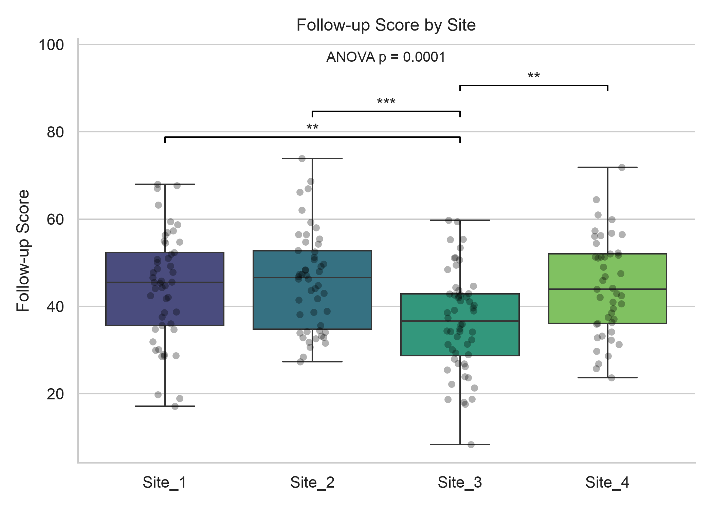
Teaching note:
statsmodels.stats.multicomp.pairwise_tukeyhsdalready applies the Tukey correction for multiple comparisons, sorow["p-adj"]is safe to use directly for star thresholds — unlike the uncorrected pairwiset.testcalls in the Rstat_compare_meansexample above. If you want the R version to also use corrected p-values for the star labels, extract them fromtukey_resultinstead of relying onstat_compare_means’s default uncorrected pairwise tests.
12. Stacked Bar Plot (Categorical Proportions)
Goal: proportion of responders vs. non-responders by arm, and smoking status composition by site — common ways to visualize categorical breakdowns.
R — ggplot2
response_summary_r <- clinical_r %>%
count(arm, response_label) %>%
group_by(arm) %>%
mutate(prop = n / sum(n))
ggplot(response_summary_r, aes(x = arm, y = prop, fill = response_label)) +
geom_col(position = "stack", width = 0.6) +
geom_text(
aes(label = scales::percent(prop, accuracy = 1)),
position = position_stack(vjust = 0.5), color = "white", size = 4
) +
scale_fill_manual(values = c("#D55E00", "#009E73")) + # Okabe-Ito
scale_y_continuous(labels = scales::percent) +
labs(x = NULL, y = "Proportion", fill = NULL, title = "Response Rate by Arm") +
theme_minimal(base_size = 12)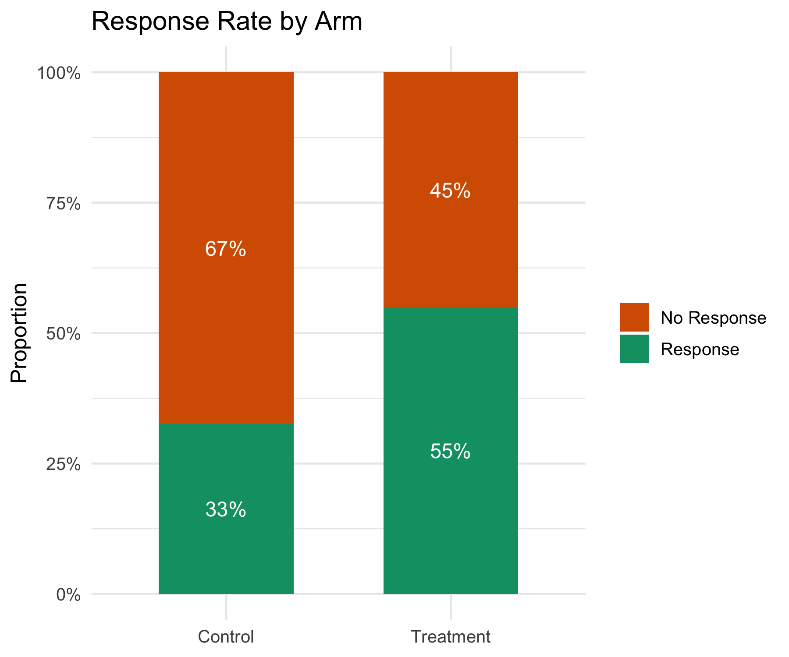
Python — matplotlib
response_summary_py = (
clinical_py.groupby(["arm", "response_label"]).size()
.unstack()
)
response_summary_py = response_summary_py.div(response_summary_py.sum(axis=1), axis=0)
okabe_ito_pair = ["#D55E00", "#009E73"]
fig, ax = plt.subplots(figsize=(6, 5))
response_summary_py.plot(kind="bar", stacked=True, color=okabe_ito_pair, ax=ax, width=0.6)<Axes: xlabel='arm'># Add percentage labels
for i, arm in enumerate(response_summary_py.index):
cumulative = 0
for col in response_summary_py.columns:
val = response_summary_py.loc[arm, col]
ax.text(i, cumulative + val / 2, f"{val:.0%}", ha="center", color="white", fontsize=10)
cumulative += valText(0, 0.33707865168539325, '67%')
Text(0, 0.8370786516853932, '33%')
Text(1, 0.22522522522522523, '45%')
Text(1, 0.7252252252252253, '55%')ax.set_xlabel(None)Text(0.5, 0, '')ax.set_ylabel("Proportion")Text(0, 0.5, 'Proportion')ax.set_title("Response Rate by Arm")Text(0.5, 1.0, 'Response Rate by Arm')ax.legend(title=None, bbox_to_anchor=(1.02, 1), loc="upper left")<matplotlib.legend.Legend object at 0x16f69fd50>ax.set_xticklabels(response_summary_py.index, rotation=0)[Text(0, 0, 'Control'), Text(1, 0, 'Treatment')]sns.despine()
plt.tight_layout()
plt.show()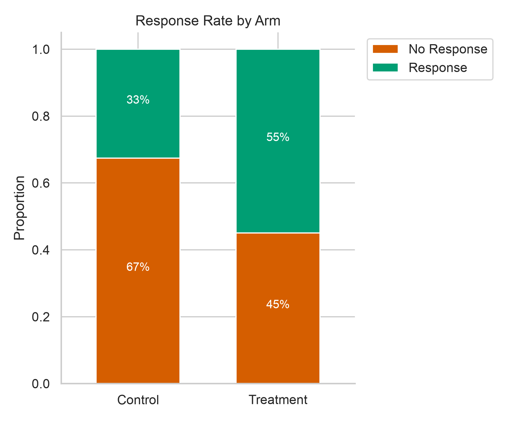
Teaching note: stacked bars are fine for 2–3 categories with a clear ordering (like response/no-response). For more than ~4 categories, consider a grouped bar chart instead — stacked segments beyond the first become hard to compare precisely since they don’t share a common baseline.
13. PCA: Principal Component Plot and Biplot
PCA is a common first step for high-dimensional data (panels of biomarkers, gene expression, lab panels) — it reduces many correlated features down to a handful of components that capture most of the variance, which you can then visualize as a 2D scatter plot.
Generate synthetic multi-feature data
We’ll simulate 6 correlated biomarkers measured on the same patients, with a real (but modest) separation between treatment arms baked in, so the PCA has something meaningful to find.
set.seed(7)
n_biomarkers <- 6
biomarker_names <- paste0("marker_", 1:n_biomarkers)
# Build correlated biomarkers: start from a shared latent factor per patient,
# plus an arm-driven shift, plus individual noise per marker.
latent_factor <- rnorm(n)
arm_shift <- ifelse(clinical_r$arm == "Treatment", 1.2, -1.2)
pca_data_r <- clinical_r %>%
select(patient_id, arm, site) %>%
bind_cols(
map_dfc(1:n_biomarkers, function(i) {
tibble(!!biomarker_names[i] := latent_factor * runif(1, 0.4, 0.9) +
arm_shift * runif(1, 0.2, 0.6) +
rnorm(n, 0, 1))
})
)
write_csv(pca_data_r, "pca_data.csv")
head(pca_data_r)# A tibble: 6 × 9
patient_id arm site marker_1 marker_2 marker_3 marker_4 marker_5 marker_6
<chr> <chr> <chr> <dbl> <dbl> <dbl> <dbl> <dbl> <dbl>
1 PT-001 Control Site… 2.34 0.682 0.672 -0.128 1.47 0.217
2 PT-002 Control Site… -1.64 -0.372 -1.23 -0.528 -2.12 -1.63
3 PT-003 Control Site… -0.569 0.242 -0.983 -2.28 -2.15 -2.73
4 PT-004 Control Site… 0.297 -0.200 -0.323 -1.41 -1.11 -2.51
5 PT-005 Treatm… Site… -1.49 0.361 0.00831 -0.608 0.675 -1.49
6 PT-006 Treatm… Site… -0.899 1.42 0.699 -0.632 -2.13 -0.745pca_data_py = pd.read_csv("pca_data.csv")
pca_data_py.head() patient_id arm site ... marker_4 marker_5 marker_6
0 PT-001 Control Site_4 ... -0.128485 1.472436 0.217418
1 PT-002 Control Site_2 ... -0.527936 -2.116650 -1.631886
2 PT-003 Control Site_2 ... -2.281137 -2.145056 -2.728090
3 PT-004 Control Site_1 ... -1.412314 -1.106873 -2.513546
4 PT-005 Treatment Site_2 ... -0.608358 0.674907 -1.492949
[5 rows x 9 columns]PC score plot (PC1 vs. PC2, colored by arm)
R — prcomp + ggplot2
biomarker_cols <- paste0("marker_", 1:6)
pca_fit_r <- prcomp(pca_data_r[, biomarker_cols], center = TRUE, scale. = TRUE)
# % variance explained per PC
var_explained_r <- (pca_fit_r$sdev^2) / sum(pca_fit_r$sdev^2) * 100
pc_scores_r <- as_tibble(pca_fit_r$x) %>%
bind_cols(pca_data_r %>% select(arm, site))
ggplot(pc_scores_r, aes(x = PC1, y = PC2, color = arm)) +
geom_point(size = 2.5, alpha = 0.75) +
stat_ellipse(level = 0.95) +
scale_color_viridis_d(end = 0.8) +
labs(
x = sprintf("PC1 (%.1f%% variance)", var_explained_r[1]),
y = sprintf("PC2 (%.1f%% variance)", var_explained_r[2]),
color = "Arm",
title = "PCA of Biomarker Panel"
) +
theme_minimal(base_size = 12)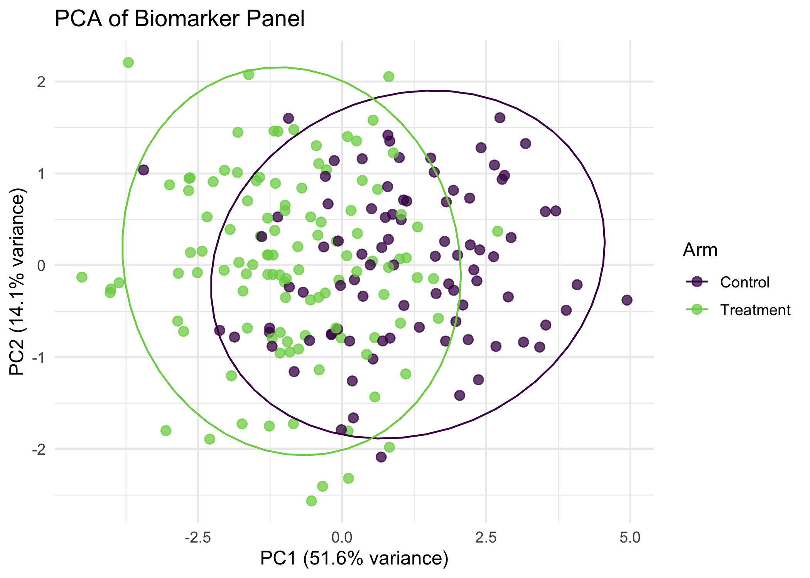
Python — scikit-learn + matplotlib
import numpy as np
from scipy.stats import chi2
from matplotlib.patches import Ellipse
from sklearn.decomposition import PCA
from sklearn.preprocessing import StandardScaler
def add_confidence_ellipse(x, y, ax, level=0.95, **kwargs):
"""Draw a covariance ellipse containing `level` of a bivariate normal."""
if len(x) < 3:
return
cov = np.cov(x, y)
eigvals, eigvecs = np.linalg.eigh(cov)
order = eigvals.argsort()[::-1]
eigvals, eigvecs = eigvals[order], eigvecs[:, order]
angle = np.degrees(np.arctan2(eigvecs[1, 0], eigvecs[0, 0]))
scale = np.sqrt(chi2.ppf(level, df=2))
width, height = 2 * scale * np.sqrt(eigvals) # full axis lengths
ell = Ellipse(xy=(np.mean(x), np.mean(y)), width=width, height=height,
angle=angle, fill=False, **kwargs)
ax.add_patch(ell)
biomarker_cols = [f"marker_{i}" for i in range(1, 7)]
X = pca_data_py[biomarker_cols].values
X_scaled = StandardScaler().fit_transform(X)
pca = PCA(n_components=2)
pc_scores = pca.fit_transform(X_scaled)
var_explained = pca.explained_variance_ratio_ * 100
pc_df = pd.DataFrame(pc_scores, columns=["PC1", "PC2"])
pc_df["arm"] = pca_data_py["arm"].values
fig, ax = plt.subplots(figsize=(7, 5))
for arm_name, color in colors.items():
sub = pc_df[pc_df.arm == arm_name]
ax.scatter(sub["PC1"], sub["PC2"], color=color, alpha=0.75, s=40, label=arm_name)
add_confidence_ellipse(sub["PC1"].values, sub["PC2"].values, ax,
level=0.95, edgecolor=color, linewidth=1.5, linestyle="--")<matplotlib.collections.PathCollection object at 0x30b787b90>
<matplotlib.collections.PathCollection object at 0x3162684d0>_ = ax.set_xlabel(f"PC1 ({var_explained[0]:.1f}% variance)")
_ = ax.set_ylabel(f"PC2 ({var_explained[1]:.1f}% variance)")
_ = ax.set_title("PCA of Biomarker Panel")
ax.legend(title="Arm")
sns.despine()
plt.tight_layout()
plt.show()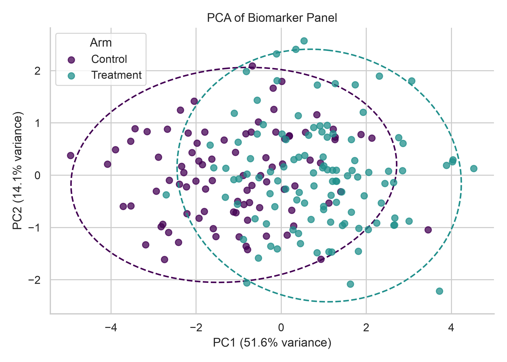
Teaching note: scaling (
scale. = TRUEin R,StandardScalerin Python) matters a lot for PCA — without it, biomarkers measured on larger numeric scales will dominate the components purely due to units, not biological signal. Always scale unless your features are already on a comparable, meaningful common scale.
Sign flips: Eigenvectors are only defined up to sign, so PC1 in R can be the negative of PC1 in Python. Both are correct. The scores and loadings are mirrored, and the variance explained is identical. If you need them to match for a plot, flip the sign of the affected component.
Biplot (PC scores + loading vectors)
A biplot overlays the original variables’ loadings (how much each biomarker contributes to each PC, and in which direction) on top of the PC score scatter plot — this tells you not just “the groups separate” but “which biomarkers are driving that separation.”
R — ggplot2 manual biplot
loadings_r <- as_tibble(pca_fit_r$rotation[, 1:2], rownames = "biomarker")
# Scale loading arrows to be visible alongside the score plot
scale_factor <- max(abs(pc_scores_r$PC1), abs(pc_scores_r$PC2)) * 0.8
ggplot() +
geom_point(data = pc_scores_r, aes(x = PC1, y = PC2, color = arm), size = 2, alpha = 0.6) +
geom_segment(
data = loadings_r,
aes(x = 0, y = 0, xend = PC1 * scale_factor, yend = PC2 * scale_factor),
arrow = arrow(length = unit(0.2, "cm")), color = "#D55E00"
) +
geom_text(
data = loadings_r,
aes(x = PC1 * scale_factor * 1.15, y = PC2 * scale_factor * 1.15, label = biomarker),
color = "#D55E00", size = 3.5, fontface = "bold"
) +
scale_color_viridis_d(end = 0.8) +
labs(
x = sprintf("PC1 (%.1f%% variance)", var_explained_r[1]),
y = sprintf("PC2 (%.1f%% variance)", var_explained_r[2]),
color = "Arm",
title = "PCA Biplot: Scores + Biomarker Loadings"
) +
theme_minimal(base_size = 12)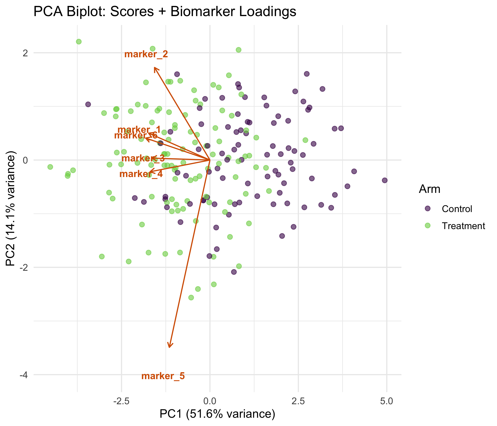
Python — matplotlib manual biplot
loadings = pca.components_.T[:, :2] # shape: (n_biomarkers, 2)
scale_factor = np.abs(pc_scores).max() * 0.8
fig, ax = plt.subplots(figsize=(7, 6))
for arm_name, color in colors.items():
sub = pc_df[pc_df.arm == arm_name]
ax.scatter(sub["PC1"], sub["PC2"], color=color, alpha=0.6, s=35, label=arm_name)
# Track the full extent of every arrow endpoint (with label padding), so we
# can expand the axis limits to fit them -- by default matplotlib only sizes
# axes to the scatter points, so a long loading arrow/label can get clipped
# even though it's being drawn correctly.
arrow_endpoints_x = []
arrow_endpoints_y = []
for i, marker_name in enumerate(biomarker_cols):
x_end = loadings[i, 0] * scale_factor
y_end = loadings[i, 1] * scale_factor
ax.annotate(
"", xy=(x_end, y_end), xytext=(0, 0),
arrowprops=dict(arrowstyle="->", color="#D55E00", lw=1.5)
)
label_x, label_y = x_end * 1.15, y_end * 1.15
ax.text(label_x, label_y, marker_name, color="#D55E00",
fontsize=9, fontweight="bold", ha="center")
arrow_endpoints_x.append(label_x)
arrow_endpoints_y.append(label_y)
# Expand axis limits to include all arrow/label endpoints plus the scatter
# points already plotted, with a small margin so nothing sits flush at the edge.
all_x = list(pc_df["PC1"]) + arrow_endpoints_x
all_y = list(pc_df["PC2"]) + arrow_endpoints_y
x_margin = (max(all_x) - min(all_x)) * 0.1
y_margin = (max(all_y) - min(all_y)) * 0.1
_ = ax.set_xlim(min(all_x) - x_margin, max(all_x) + x_margin)
_ = ax.set_ylim(min(all_y) - y_margin, max(all_y) + y_margin)
_ = ax.set_xlabel(f"PC1 ({var_explained[0]:.1f}% variance)")
_ = ax.set_ylabel(f"PC2 ({var_explained[1]:.1f}% variance)")
_ = ax.set_title("PCA Biplot: Scores + Biomarker Loadings")
ax.legend(title="Arm")
sns.despine()
plt.tight_layout()
plt.show()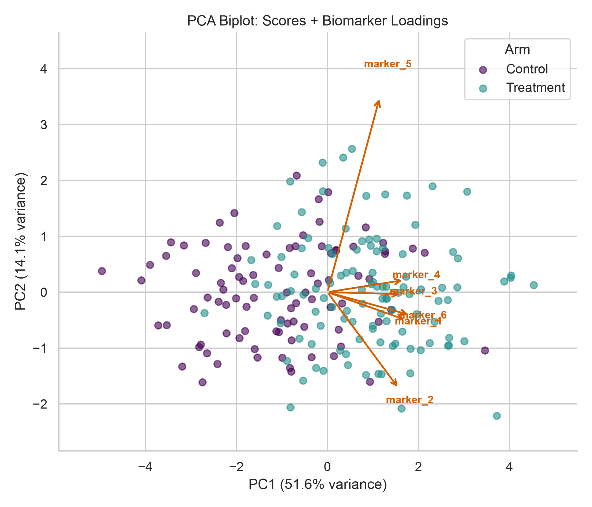
Teaching note: in a biplot, arrow direction shows which PCs a variable contributes to, and arrow length shows how strongly it contributes overall. Two arrows pointing the same direction indicate positively correlated variables; arrows pointing in opposite directions indicate negatively correlated variables; arrows at roughly 90° indicate little correlation between those two variables.
Scree plot (companion figure)
scree_df_r <- tibble(
PC = factor(paste0("PC", 1:length(var_explained_r)), levels = paste0("PC", 1:length(var_explained_r))),
variance = var_explained_r,
cumulative = cumsum(var_explained_r)
)
lvls <- c("Cumulative","Individual")
ggplot(scree_df_r, aes(x = PC)) +
geom_col(aes(y = variance, fill = "Individual"), alpha = 0.8) +
geom_line(aes(y = cumulative, group = 1, color = "Cumulative"),
linewidth = 1) +
geom_point(aes(y = cumulative, color = "Cumulative"), size = 2) +
geom_text(aes(y = variance, label = sprintf("%.1f%%", variance)),
vjust = -0.8, size = 3) +
geom_text(aes(y = cumulative, label = sprintf("%.0f%%", cumulative)),
vjust = 1.8, size = 3, color = "#D55E00") +
scale_fill_manual(
name = NULL, limits = lvls,
values = c("Individual" = "#73b8ca", "Cumulative" = NA)
) +
scale_color_manual(
name = NULL, limits = lvls,
values = c("Individual" = NA, "Cumulative" = "#D55E00")
) +
scale_y_continuous(limits = c(0, 105)) +
labs(x = NULL, y = "% Variance Explained", title = "Scree Plot") +
theme_minimal(base_size = 12) +
theme(
legend.position = "inside",
legend.position.inside = c(0.85, 0.45),
legend.background = element_rect(fill = "white", color = "grey80"),
legend.margin = margin(4, 6, 4, 6)
)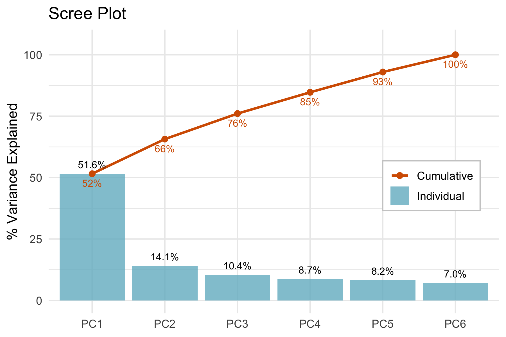
pca_full = PCA().fit(X_scaled)
var_explained_full = pca_full.explained_variance_ratio_ * 100
cumulative_full = np.cumsum(var_explained_full)
fig, ax = plt.subplots(figsize=(6, 4))
pcs = [f"PC{i+1}" for i in range(len(var_explained_full))]
ax.bar(pcs, var_explained_full, color="#73b8ca", alpha=0.8, label="Individual")
ax.plot(pcs, cumulative_full, color="#D55E00", marker="o", linewidth=2, label="Cumulative")
for i, v in enumerate(var_explained_full):
ax.text(i, v + 2, f"{v:.1f}%", ha="center", fontsize=8)
for i, v in enumerate(cumulative_full):
ax.text(i, v - 6, f"{v:.0f}%", ha="center", fontsize=8, color="#D55E00")
_ = ax.set_ylabel("% Variance Explained")
_ = ax.set_title("Scree Plot\nBars: individual PC variance | Line: cumulative variance", fontsize=10)
_ = ax.set_ylim(0, 110)
ax.legend(loc="center right")<matplotlib.legend.Legend object at 0x30aa20a10>sns.despine()
plt.tight_layout()
plt.show()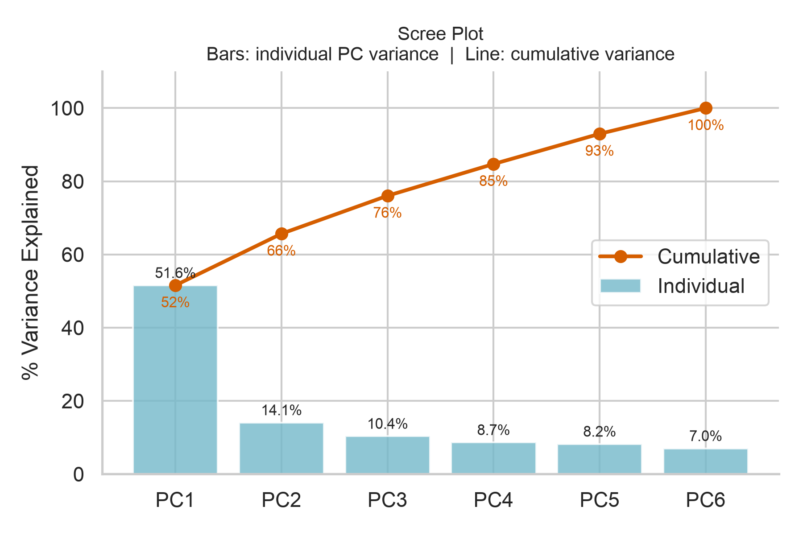
A note on PCA / dimensionality-reduction plots specifically
Since many of you work with omics or high-dimensional feature data, a few PCA-specific notes that go beyond “just use a scatter plot”:
- Always report % variance explained in the axis label for the PCs you’re plotting — this is standard practice and reviewers will ask for it if it’s missing
- Color points by a meaningful metadata variable (condition, batch, cell type) — an uncolored PCA plot answers “is there structure?” but not “what’s driving it?”
- If you’re checking for batch effects, plot the same PCA colored by batch separately from the plot colored by biological condition — overlaying both as different shapes/colors in one panel usually gets visually noisy past 2 categorical variables
- Consider a scree plot (bar chart of % variance explained per PC) as a companion figure, so readers can judge whether PC1 vs. PC2 captures most of the structure or whether later PCs still matter
14. Multi-Panel Publication Figure
R — patchwork
library(patchwork)
p1 <- ggplot(clinical_r, aes(biomarker, followup_score, color = arm)) +
geom_point(alpha = 0.6) + scale_color_viridis_d(end = 0.8) +
theme_minimal(base_size = 10) + labs(title = "A", x = "Biomarker", y = "Score")
p2 <- ggplot(clinical_r, aes(arm, followup_score, fill = arm)) +
geom_boxplot(alpha = 0.7) + scale_fill_viridis_d(end = 0.8) +
theme_minimal(base_size = 10) + theme(legend.position = "none") +
labs(title = "B", x = NULL, y = "Score")
p3 <- ggplot(clinical_r, aes(age)) +
geom_histogram(bins = 20, fill = "#21908C", alpha = 0.8) +
theme_minimal(base_size = 10) + labs(title = "C", x = "Age", y = "Count")
(p1 | p2) / p3 + plot_layout(guides = "collect")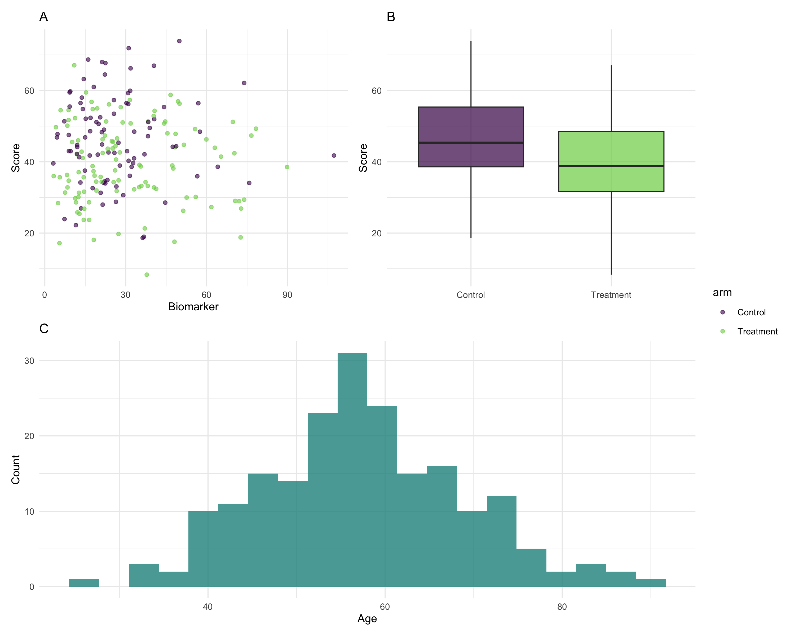
#p1 / p2 / p3 + plot_layout(guides = "collect")Python — gridspec
from matplotlib.patches import Patch
arms = list(clinical_py["arm"].unique()) # or set your own order
pal = dict(zip(arms, sns.color_palette("viridis", n_colors=len(arms))))
fig = plt.figure(figsize=(10, 8))
gs = fig.add_gridspec(2, 2)
ax1 = fig.add_subplot(gs[0, 0])
sns.scatterplot(data=clinical_py, x="biomarker", y="followup_score", hue="arm",
hue_order=arms, palette=pal, alpha=0.6, ax=ax1, legend=False)<Axes: xlabel='biomarker', ylabel='followup_score'>_ = ax1.set_title("A", loc="left", fontweight="bold")
ax2 = fig.add_subplot(gs[0, 1])
sns.boxplot(data=clinical_py, x="arm", y="followup_score", hue="arm",
order=arms, hue_order=arms, palette=pal, legend=False, ax=ax2)
_ = ax2.set_title("B", loc="left", fontweight="bold")
_ = ax2.set_xlabel(None)
ax3 = fig.add_subplot(gs[1, :])
sns.histplot(data=clinical_py, x="age", bins=20, color="#21908C", ax=ax3)
_ = ax3.set_title("C", loc="left", fontweight="bold")
# One legend for the whole figure, on the right
handles = [Patch(facecolor=pal[a], label=a) for a in arms]
fig.legend(handles=handles, title="Arm", loc="center left",
bbox_to_anchor=(1.0, 0.5), frameon=False)
sns.despine()
plt.tight_layout()
plt.show()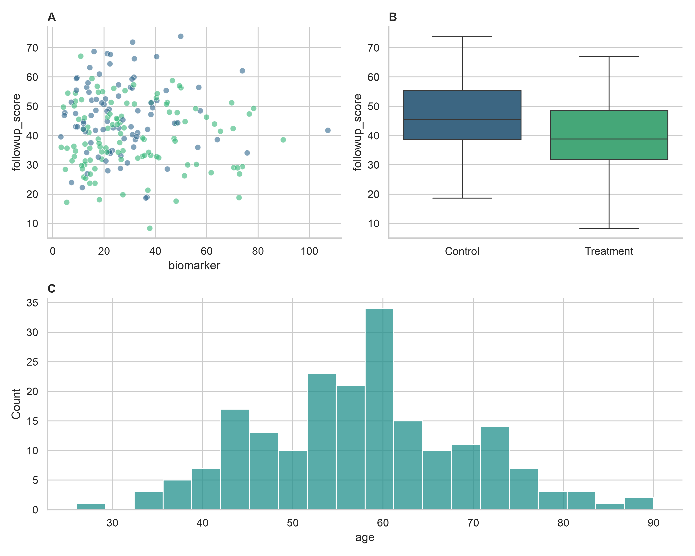
15. Exporting for Publication
R
ggsave(
"figure1_panel_qmd_R.pdf",
plot = last_plot(),
width = 7, height = 5, units = "in", dpi = 300
)
ggsave(
"figure1_panel_qmd_R.tiff",
plot = last_plot(),
width = 7, height = 5, units = "in", dpi = 300, compression = "lzw"
)Python
fig.savefig("figure1_panel_qmd_Python.pdf", dpi=300, bbox_inches="tight")
fig.savefig("figure1_panel_qmd_Python.tiff", dpi=300, bbox_inches="tight", pil_kwargs={"compression": "tiff_lzw"})16. Practice Exercise (20 min)
Using clinical_trial_data.csv, longitudinal_data.csv, and pca_data.csv, pick one of the following and build a publication-ready version in your language of choice:
- A Table 1 comparing baseline characteristics by arm, with appropriate tests per variable type
- A density plot or ridgeline plot comparing a continuous variable across groups
- A Kaplan-Meier curve comparing arms, with a risk table
- A forest plot showing hazard ratios across 3+ subgroups of your choosing
- An ROC curve with AUC for biomarker predicting responder status
- A line chart of score trajectory over time by arm, with error bars
- An annotated boxplot/violin or mean±SD bar (with significance stars) comparing
baseline_scorevsfollowup_scoreacrosssite - A stacked bar chart of
smokerstatus composition bysite - A PCA score plot or biplot of the biomarker panel, colored by arm
Checklist before you’re done:
Appendix: Quick Reference Table
| Task | R | Python |
|---|---|---|
| Summary table + tests | gtsummary::tbl_summary | tableone.TableOne |
| Chi-square / Fisher | chisq.test / fisher.test | scipy.stats.chi2_contingency / fisher_exact |
| Continuous group test | t.test / wilcox.test | scipy.stats.ttest_ind / mannwhitneyu |
| ANOVA + pairwise | aov + TukeyHSD | scipy.stats.f_oneway + statsmodels pairwise_tukeyhsd |
| Scatter | geom_point | sns.scatterplot |
| Density plot | geom_density | sns.kdeplot |
| Ridgeline plot | ggridges::geom_density_ridges | joypy.joyplot |
| Line chart (mean +/- error) | geom_line + geom_errorbar | ax.errorbar |
| Survival curve | survminer::ggsurvplot | lifelines.KaplanMeierFitter |
| ROC curve + AUC | pROC::roc + ggroc | sklearn.metrics.roc_curve + auc |
| Forest plot | manual ggplot2 | manual matplotlib |
| Boxplot + jitter | geom_boxplot + geom_jitter | sns.boxplot + sns.stripplot |
| Mean +/- SD bar + stars | geom_col + geom_errorbar + annotate | ax.bar + yerr + ax.text |
| Boxplot + stats | ggpubr::stat_compare_means | statannotations.Annotator |
| Stacked bar | geom_col(position=“stack”) | df.plot(kind=“bar”, stacked=True) |
| PCA | prcomp | sklearn.decomposition.PCA |
| Multi-panel | patchwork | matplotlib.gridspec |
| Colorblind palette | scale_color_viridis_d | palette=“viridis” |
| Export vector | ggsave(device=“pdf”) | savefig(format=“pdf”) |
Appendix: Color Palette Sources
Both palettes used throughout this document are chosen deliberately for accessibility and are standard in biomedical publishing — not arbitrary aesthetic choices.
Viridis (used for continuous/ordered data)
- Designed by Stéfan van der Walt and Nathaniel Smith for matplotlib in 2015, as one of four candidate perceptually uniform colormaps (magma, inferno, plasma, viridis)
- Became matplotlib’s default colormap in version 2.0
- Perceptually uniform, monotonically increasing in luminance (so it still reads correctly in grayscale/photocopy), and built to remain legible under common forms of color vision deficiency
- Source: https://bids.github.io/colormap/
- R:
viridispackage, orscale_color_viridis_d()/scale_color_viridis_c()in ggplot2 - Python: built into matplotlib/seaborn —
palette="viridis"orcmap="viridis"
Okabe-Ito (used for categorical data: arms, subgroups)
- Proposed by Masataka Okabe (Jikei Medical School) and Kei Ito (University of Tokyo), 2008: “Color Universal Design (CUD): How to make figures and presentations that are friendly to colorblind people”
- An empirically-chosen 8-color qualitative palette that stays distinguishable across the most common forms of color blindness
- Popularized further by Bang Wong’s 2011 Nature Methods commentary, “Points of view: Color blindness” (doi:10.1038/nmeth.1618) — hence it’s sometimes called the “Wong palette”
- R: available in base R 4.0+ via
palette.colors(), and natively in ggplot2 ≥ 3.4.0 viascale_color_okabeito()(from theseeor similar extension packages) - Python: no built-in name, define manually:
okabe_ito = ['#E69F00', '#56B4E9', '#009E73', '#F0E442',
'#0072B2', '#D55E00', '#CC79A7', '#000000']
import matplotlib.pyplot as plt
plt.rcParams['axes.prop_cycle'] = plt.cycler(color=okabe_ito)
# or: sns.set_palette(okabe_ito)Rule of thumb for this workshop: viridis for anything continuous (biomarker levels, scores, expression values), Okabe-Ito for anything categorical (treatment arm, sex, subgroup). This matches the convention used across Nature-family journals and is a safe default when you don’t know your reviewers’ or readers’ color vision status.
Materials for this workshop were drafted with assistance from Claude (Anthropic) and reviewed and edited by the instructor.